pacman::p_load(tidyverse, readxl, scales, ggsci, paletteer, knitr, RColorBrewer, scico)8 Gráficos
Para descrever os dados e visualizar o que está acontecendo, recomenda-se utilizar um gráfico adequado. O que é adequado depende principalmente do tipo de dados, bem como das características particulares do que se quer explorar. Além disso, um gráfico em um relatório sempre é um fator de “impacto”. Ou seja, pode ter um efeito positivo no leitor ou fazê-lo abandonar a leitura. Finalmente, um gráfico de frequência pode ser utilizado para ilustrar, explicar uma situação complexa onde palavras ou uma tabela podem ser confusos, extensos ou de outro modo insuficiente. Por outro lado, deve-se evitar usar gráficos onde poucas palavras expressam claramente o que se quer mostrar. Aconselha-se que, ao analisar os dados, é importante inspecioná-los como se fossem uma imagem, uma fotografia, ver como eles se parecem, qual o seu aspecto, e só então pensar em interpretar os aspectos vitais da estatística (Field, Miles, e Field 2012).
O R básico fornece uma grande variedade de funções para visualizar dados, elas de uma maneira relativamente simples permitem a construção de gráficos que facilitam a interpretação tanto de variáveis categórica como numéricas. Existe uma farta bibliografia para a construção de gráficos, utilizando o R básico, mas a The R Graph Gallery responde a maioria das dúvidas, apesar de ter seu foco em tidyverse (veja Seção 5.4) e ggplot2.
Neste livro, a ênfase será no pacote ggplot2 (Wickham 2016). Este pacote é uma ferramenta extremamente versátil que oferece uma estrutura com grande flexibilidade para exibir os dados através de gráficos. O gpglot2 não é apenas uma instrumento para criar gráficos, mas uma maneira de pensar sobre a visualização de dados de uma forma mais estruturada e poderosa.
8.1 Pacotes necessários neste capítulo
Certifique-se que estes pacotes estejam instalados e carregados, utilizando o pacote pacman (consulte a Seção 4.2.2.4):
8.2 Fonte de dados para este capítulo
Os dados serão provenientes do conjunto de dados apresentado na Seção 5.6, denominado de dadosMater.xlsx e que pode ser encontrado para baixar aqui.Serão selecionadas as variáveis de interesse e adicionadas variáveis que categorizam a idade da mãe e a intensidade do tabagismo durante a gestação1. Além disso, serão feitas transformações para fatores das variáveis numéricas que na realidade são fatores. O código inicia com a semente set.seed() para garantir a repetibilidade.
set.seed(123)
dados <- readxl::read_excel("dados/dadosMater.xlsx") %>%
select(idadeMae,fumo, quantFumo, ig, pesoRN, compRN, para, sexo) %>%
mutate(fumo = factor(fumo,
levels = c(1,2),
labels = c("Fumante", "Não fumante")),
sexo = factor(sexo,
levels = c(1,2),
labels = c("Masculino", "Feminino")),
categIdade = case_when(
idadeMae < 20 ~ "< 20 anos",
idadeMae >= 20 & idadeMae <= 35 ~ "20 a 35 anos",
idadeMae > 35 ~ "> 35 anos"),
categIdade = factor(categIdade,
levels = c("< 20 anos",
"20 a 35 anos",
"> 35 anos")),
categFumo = case_when(
quantFumo == 0 ~ "nao_fumante",
quantFumo <= 10 ~"fumante_leve",
quantFumo > 10 & quantFumo < 20 ~ "fumante_moderada",
quantFumo >= 20 ~ "fumante_pesada"),
categFumo = factor(categFumo,
levels = c("nao_fumante",
"fumante_leve",
"fumante_moderada",
"fumante_pesada")))
str(dados)tibble [1,368 × 10] (S3: tbl_df/tbl/data.frame)
$ idadeMae : num [1:1368] 42 29 19 31 34 29 30 34 17 32 ...
$ fumo : Factor w/ 2 levels "Fumante","Não fumante": 2 2 2 2 2 1 1 2 2 2 ...
$ quantFumo : num [1:1368] 0 0 0 0 0 10 20 0 0 0 ...
$ ig : num [1:1368] 29 33 33 33 33 33 33 33 34 34 ...
$ pesoRN : num [1:1368] 1035 2300 1580 1840 2475 ...
$ compRN : num [1:1368] 35.5 45 39 41 47 41 44 44 47 48 ...
$ para : num [1:1368] 5 0 0 1 2 1 2 1 0 4 ...
$ sexo : Factor w/ 2 levels "Masculino","Feminino": 2 2 2 2 2 2 2 2 2 2 ...
$ categIdade: Factor w/ 3 levels "< 20 anos","20 a 35 anos",..: 3 2 1 2 2 2 2 2 1 2 ...
$ categFumo : Factor w/ 4 levels "nao_fumante",..: 1 1 1 1 1 2 4 1 1 1 ...8.3 Pacote ggplot2
O ggplot2 é um pacote da linguagem R voltado para a visualização de dados, oferecendo uma abordagem poderosa e elegante baseada na Gramática dos Gráficos (Wickham 2010).
8.3.1 Gramática dos Gráficos
O R base usa funções específicas para a construção de um gráfico, por exemplo, hist() para criar um histograma ou a função plot() que é uma função mais genérica que produz um gráfico de dispersão, no R, quando são passados a ela dois vetores numéricos ou boxplots quando são fornecidos dados categóricos.
Tomando as variáveis compRN e pesoRN de uma amostra de de 100 observações do conjunto dados, com filtro para as gestações a termo 2, será construído um gráfico de dispersão (Figura 8.1) com a funçãoplot() do R base:
plot (x =jitter(dadosRNT100$compRN,10),
y = dadosRNT100$pesoRN,
ylab = "Peso de Recém-nascido (g)",
xlab = "Comprimento do Recém-nascido (cm)",
cex.axis = 0.8,
las = 1,
bty = "L",
pch = 19,
cex = 1.5,
col = "cyan4")
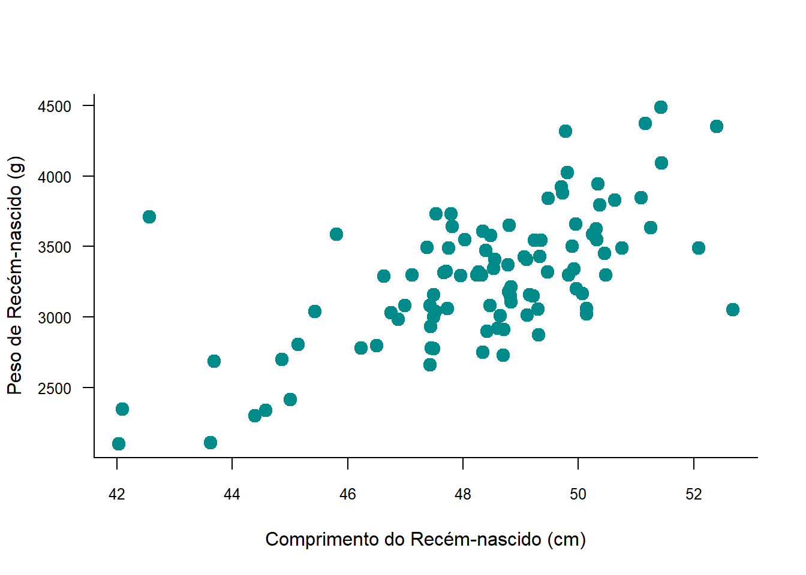
Este gráfico não difere muito do gráfico da Figura 8.7 no seu aspecto final, produzido no ggplot2. Entretanto, a filosofia de construção dos gráficos é muito diferente.
Em vez de se pensar em funções específicas para cada tipo de gráfico, o ggplot2 permite que se construa gráficos combinando diferentes componentes. Pode-se pensar nisso como se fosse a montagem de um quebra-cabeça, onde cada peça representa uma parte do gráfico. Essa abordagem modular e intuitiva é o que torna o ggplot2 tão flexível e poderoso.
Os principais componentes combinados para criar um gráfico no ggplot2 são:
Dados (Data): cada camada deve ter dados associados. É o conjunto de dados que se quer visualizar. Geralmente, ele deve estar em um formato tidy (arrumado), onde cada coluna é uma variável e cada linha é uma observação (Seção 5.3).
Mapeamentos Estéticos: Os mapeamentos estéticos são definidos com a função
aes(). A parte onde se associa as variáveis do conjunto de dados a propriedades visuais do gráfico, como os eixos x e y, a cor, o tamanho, a forma e a transparência. Por exemplo, é possível mapear a variável peso do recém-nascido para o eixo y e a variável comprimento do recém-nascido para o eixo x. Os mapeamentos estéticos podem ser fornecidos naggplot(), chamada inicial, em camadas individuais ou em uma combinação de ambos. Todas essas chamadas criam a mesma especificação de plotagem.Escalas (Scales) podem ser usadas para controlar a forma dos mapeamentos estéticos. Pode-se usar escalas para ajustar cores, tamanhos e a aparência dos eixos.
Geometrias (Geoms): Formas geométricas que representam os dados. É aqui que se define o tipo de gráfico a ser criado. Alguns exemplos são:
geom_point()para um gráfico de dispersão (pontos).geom_line()para um gráfico de linha.geom_bar()para um gráfico de barras.geom_errorbar(): barras de erro.geom_bar(stat = "identity"): um gráfico de barras de resumos pré-calculadosgeom_histogram()para um histograma.geom_boxplot()para um boxplot.
Pode-se adicionar múltiplas camadas que permitem combinar diferentes tipos de geoms em uma única visualização. Por exemplo, é possível colocar uma linha de tendência (
geom_smooth()) em cima de um gráfico de dispersão (geom_point()), veja a Figura 8.16.Estatísticas: O
ggplot2não permite a colocação direta de estatísticas dentro dos geoms. A forma mais comum de adicionar estatísticas em um gráfico é usando a funçãostat_. As funçõesstat_calculam as estatísticas (como média, mediana, contagem) e, em seguida, as representam no gráfico, criando uma camada de dados calculados.stat_summary: adiciona um resumo estatístico a cada grupo. Usada para adicionar a média, mediana ou desvio padrão em um geom já existente, como um gráfico de dispersão ou de barras.stat_smooth: Adiciona uma linha de tendência (como regressão linear) com um intervalo de confiança.stat_bin: Calcula a contagem de cada bin e os plota como um histograma.
A partir das últimas versões do
ggplot2, é possível mapear variáveis calculadas pelostat_diretamente em uma estética, como y, size ou label. Isso dá uma grande flexibilidade.Em vez de usar as funções
stat_, é possível calcular as estatísticas em um passo separado usando odplyre, em seguida, plotar esses dados pré-calculados usandoggplot2.- Calcule as estatísticas usando
group_by()esummarize()dodplyr. - Crie o gráfico usando os novos dados calculados.
Ajustes de posição: aplicam pequenos ajustes na posição dos elementos dentro de uma camada. Por exemplos, há três ajustes que são úteis em gráficos de pontos
position_nudge(): mover pontos por um deslocamento fixo.position_jitter(): adicione um pouco de ruído aleatório a cada posição (Figura 8.6).position_jitterdodge(): desviar de pontos dentro de grupos e depois adicionar um pouco de ruído aleatório. Na construção do gráfico de dispersão será mostrado exemplo desses ajustes (Seção 8.4.4).
Para o gráfico de barras, pode-se aplicar alguns ajustes:
position_stack(): empilhar barras (ou áreas) sobrepostas umas sobre as outras.position_fill(): empilhe barras sobrepostas, dimensionando para que o topo esteja sempre em 1.position_dodge(): coloque barras sobrepostas (ou boxplots) lado a lado.
Facetas (Facets): Permitem criar múltiplos subgráficos baseados em uma ou mais variáveis categóricas. É uma ótima maneira de explorar as relações entre diferentes grupos de dados de forma visual (Figura 8.15).
Temas (Themes): Controlam a aparência geral do gráfico, como a cor de fundo, a fonte, as linhas da grade e a aparência dos títulos. O
ggplot2permite construir gráficos complexos camada por camada, possibilitando a criação de gráficos sofisticados (Wickham, Navarro, e Pedersen 2023). Em cada uma das camadas deve-se ter preocupação em controlar os componentes do gráfico.
8.3.2 Vantagens do ggplot2
Consistência e Flexibilidade: A abordagem de camadas e a gramática de gráficos permitem criar uma variedade enorme de visualizações de forma consistente.
Qualidade Visual: Os gráficos produzidos pelo ggplot2 são esteticamente agradáveis e prontos para publicações.
Intuitividade: Uma vez que se entenda o conceito, é fácil construir gráficos complexos de forma gradual.
Extensibilidade: O pacote pode ser estendido com outros pacotes que adicionam novas geoms, temas ou funcionalidades, como o gganimate para animações ou o ggrepel para evitar sobreposição de rótulos.
8.4 Gráfico de dispersão
Um gráfico de dispersão (Scatterplot) exibe a relação entre duas variáveis numéricas. Cada ponto representa uma observação. Suas posições nos eixos x (horizontal) e y (vertical) representam os valores das duas variáveis.
O gráfico de dispersão permite identificar padrões, tendências e a força de uma possível correlação entre essas variáveis. Frequentemente, vem acompanhado por um cálculo do coeficiente de correlação (Capítulo 17), que , em geral, mede a relação linear.
Pretende-se, na construção de um gráfico de dispersão introduzir a lógica do ggplot2. Os dados usados para o exemplo, serão os mesmos usados na construção do gráfico de dispersão com a função nativa plot()(Seção 8.3.1).
8.4.1 Gráfico de dispersão básico
Este é o exemplo mais simples que começa com o mapeamento de duas variáveis para os eixos x e y. A função central do pacote ggplot2 é ggplot(), que recebe os dados por meio do argumento data. Em seguida, a função estética aes() define os mapeamentos dos eixos x e y, iniciando o gráfico com uma camada base — ainda vazia, mesmo que os dados já tenham sido fornecidos. Essa camada base corresponde a um painel cinza (Figura 8.2), sobre o qual outras camadas serão adicionadas. Funciona como um terreno pronto para receber uma construção, que será erguida com o uso de uma função geométrica.
ggplot(data = dadosRNT100, aes(x = compRN, y = pesoRN))
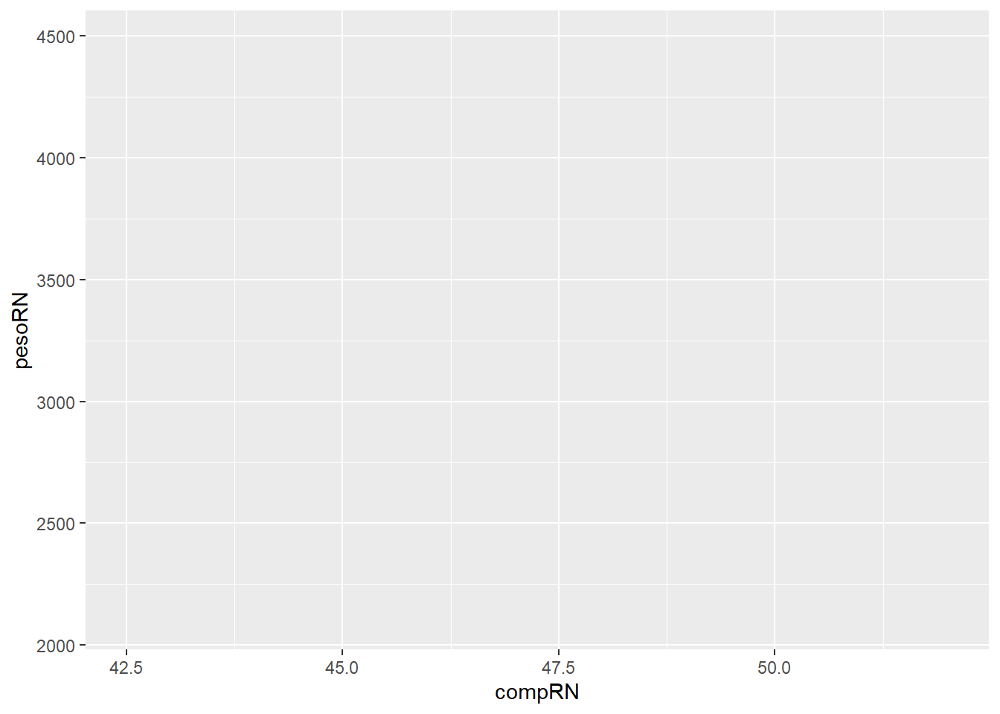
8.4.2 Geometria
A seguir, adiciona-se 3 a camada dos pontos que usa a geometria geom_point() para criar um gráfico de dispersão.
ggplot(data = dadosRNT100,
mapping = aes(x = compRN, y = pesoRN)) +
geom_point()
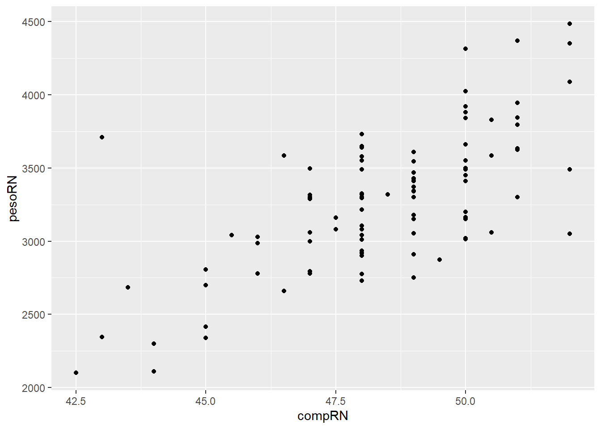
A Figura 8.3 mostra um gráfico de dispersão ainda sem um aspecto elegante, mas com as informações necessárias. Tem este fundo escuro que não é do agrado da maioria, além de não apresentar o rótulos das variáveis de forma mais clara, mais adequada.
O mesmo resultado da Figura 8.3 pode ser obtido, colocando o mapeamento com a estética aes() dentro do geom_point():
ggplot(data = dadosRNT100) +
geom_point(aes(x = compRN, y = pesoRN))8.4.3 Customização do gráfico de dispersão
A geometria geom_point() múltiplas opções de customização, através de seus argumentos:
- color: a cor do traço, o contorno do círculo
- stroke: a largura do traço no ponto
- fill: cor da parte interna do ponto
- shape: forma do marcador (Figura 8.4)
- alpha: transparência do ponto, varia de 0 a 1, 0 é totalmente transparente; 1 = opaco.
- size: tamanho do ponto

Para definir um tamanho uniforme para todos os pontos do gráfico, basta especificar um valor numérico no argumento size da função geom_point(), como por exemplo size = 1.5 (padrão). Para melhor visualização, será escolhido size = 3 ou 4. O mesmo princípio se aplica à cor. No argumento color (vai colorir o contorno dos pontos), colocar, por exemplo, color = “gray20” ou, se o formato (shape), no argumento fill para a cor de preenchimento do ponto. A escolha das cores depende do gosto pessoal, na Seção 8.4.6, serão mostrados alguns princípios que auxiliam esse processo. Para alterar o formato dos pontos, usar o argumento shape, conforme as opções na figura Figura 8.4. Somente os formatos 21 a 25 permitem preenchimento. No exemplo, será usado shape = 21. Nesse caso, é possível adicionar o argumento para definir a cor interna do ponto, ou seja, uma cor fixa (fill = “tomato”) ou uma variável categórica, como sexo. Ao utilizar uma variável como fill = sexo, o ggplot2 preencherá os pontos com cores diferentes automaticamente, de acordo com os níveis dessa variável.
ggplot(data = dadosRNT100,
mapping = aes(x = compRN, y = pesoRN)) +
geom_point(color = "gray20",
fill ="tomato",
alpha = 1,
shape = 21,
size = 3,
stroke =1)
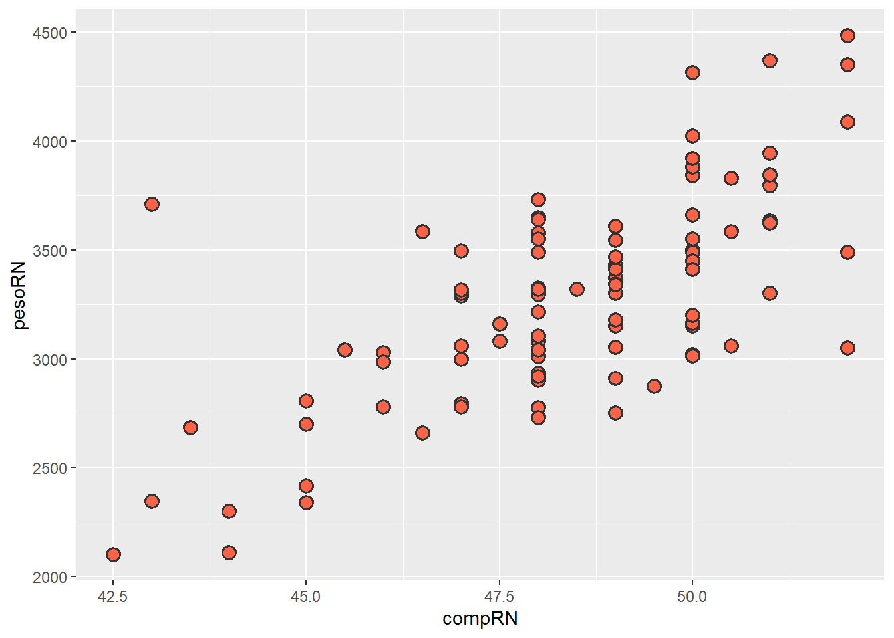
8.4.4 Lidando com a sobreposição dos pontos e os rótulos
Na Figura 8.5 a modificação realizada melhorou o aspecto do gráfico. Entretanto, os pontos estão se sobrepondo, porque o comprimento dos recém-nascidos está registrado como uma variável numérica discreta e existem vários com o mesmo comprimento. Nesse caso, a solução para evitar a sobreposição, é provocar um pequeno deslocamento aleatório dos pontos, tornando o gráfico mais legível. Isto é feito, embutindo o jitter (espalhamento) com um argumento dentro do geom_point(), o position = position_jitter (width = 0.2, height = 0). O argumento width controla o deslocamento horizontal (eixo x); height controla o deslocamento vertical (eixo y). No exemplo (Figura 8.6), os pontos serão espalhados horizontalmente, mantendo a posição vertical. Será usado o argumento width = 0.2 que espalha os pontos de forma leve, sem alterar o eixo y.
Nesta modificação, será colocada mais uma camada para trabalhar com os rótulos dos eixos x e y., usando as funções ylab() e xlab().
ggplot(data = dadosRNT100,
mapping = aes(x = compRN, y = pesoRN, fill = sexo)) +
geom_point(position = position_jitter(width = 0.2, height = 0),
color = "gray20",
fill ="tomato2",
shape = 21,
alpha = 1,
size = 3,
stroke = 1) +
ylab("Peso do Recém-nascido (g)") +
xlab("Comprimento do Recém-nascido (cm)")
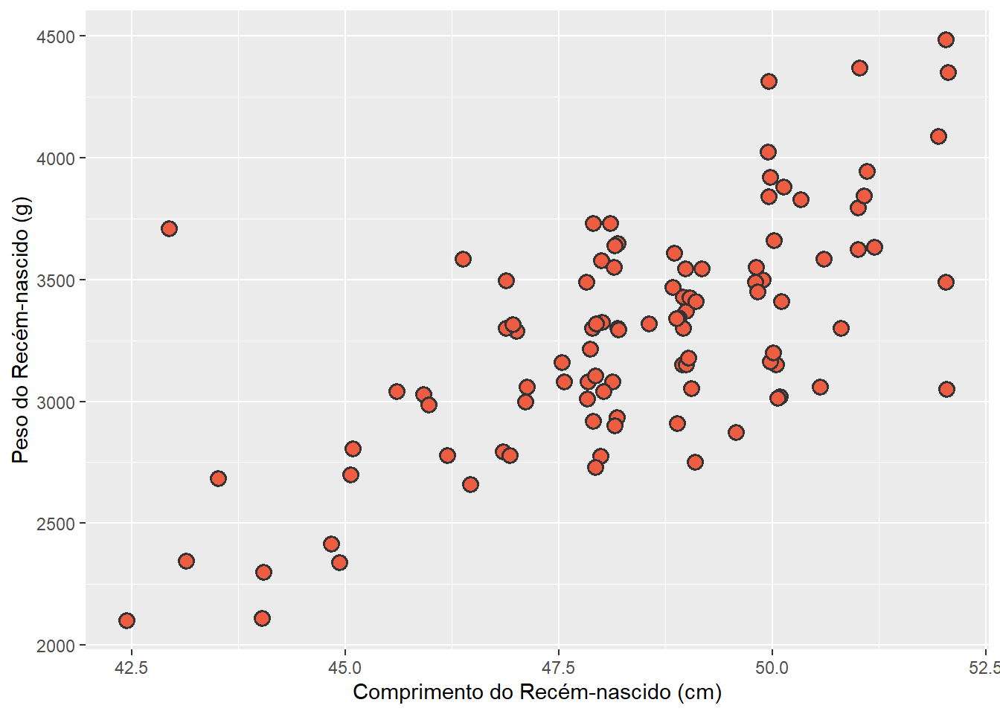
8.4.5 Mudando o tema
A Figura 8.6 já é um gráfico bem aceitável, praticamente sem defeitos, apesar de o autor implicar muito com o fundo cinza – theme_gray(). Essa cor acinzentada padrão do ggplot2 pode ser alterada pela definição de outro tema integrado, entre muitos, como theme_classic() que é um tema de aparência clássica, com linhas dos eixos x e y e sem linhas de grade, semelhante ao da Figura 8.1, criado com a função nativa plot(). Outro tema interessante é o theme_bw() que usa um fundo branco e linhas finas de grade cinza.
Para ver outras possibilidades acesse Completes themes - ggplt2. Foi adicionado o argumento base_size = 13, para modificar o tamaho das letras.
O gráfico da Figura 8.6 com a adição do theme_classic() e aumento dp tamanho das letras, pode ser observado na Figura 8.7.
ggplot(data = dadosRNT100,
mapping = aes(x = compRN, y = pesoRN)) +
geom_point(position = position_jitter(width = 0.2, height = 0),
color = "gray20",
fill ="steelblue",
shape = 21,
alpha = 1,
size = 3,
stroke =1) +
ylab("Peso do Recém-nascido (g)") +
xlab("Comprimento do Recém-nascido (cm)")+
theme_classic(base_size = 13)
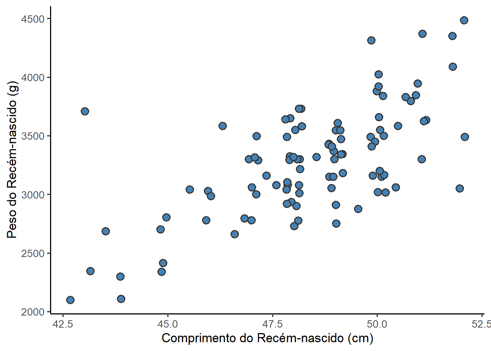
8.4.6 Mudando as cores
Na Seção 8.4.3 foi introduzido o uso de cores no R. Agora, apesar deste tema praticamente não ter limites, serão mostrados alguns princípios do manuseio das cores no ggplot2. É possível visualizar as cores para usar no ggplot2 de uma maneira fácil, acessando, por exemplo, An overview of color names in R ou um guia completo Colors (ggplot2).
A escolha das cores pode ser feita especificando o seu nome em inglês. Essa escolha é pessoal. O R possui 657 cores integradas que permitem uma gama ampla de opções. Pode-se chamar uma cor pelo nome e a função colors() exibe todos elas. Uma outra maneira de especificar as cores, é usar o sistema RGB ou hexadecimal. O código hexadecimal da cor branca é #FFFFFFF, da “gray58” é #949494, da “yellow4” é #999900, etc. Opcionalmente, a cor pode ser transparente, usando o formato “#RRGGBBAA”. Alpha refere-se à transparência de um geom_. Os valores de alpha variam de 0 a 1, com valores mais baixos correspondendo a cores mais transparentes. O argumento alpha também pode ser modificado por meio da estética de color ou fill se qualquer uma das estéticas fornecer valores de cor usando uma especificação RGB.
8.4.6.1 Mapeando Cores com aes()
A forma mais comum de usar cores é mapeando uma variável para a estética color ou fill dentro da função aes(). Quando se faz isso, o ggplot2 atribui cores automaticamente, criando uma legenda. Esta legenda pode ser modificada de posição com a função theme(legend.position = “bottom”), que colocará a legenda na parte inferior do gráfico4. No caso deste gráfico, o título da legenda pode ser removido, porque ele é óbvio. Para isso, basta usar a função labs() que manauseia os títulos, usando color ou fill, dependendo se for a cor do contorno ou do preenchimento do ponto.
color: Usado para o contorno de formas, como a borda dos pontos ( ou como será visto adiante, as linhas de um gráfico de linha, ou a borda de um boxplot, de um gráfico de barra).
fill: Usado para preencher formas, como pontos (
shape21 a 25) ou como as barras de um histograma ou as caixas de um boxplot (ver adiante).
Inicialmente, serão manipuladas as cores do gráfico da Figura 8.7, utilizando uma variável categórica, fill = sexo, dentro da função aes().
ggplot(data = dadosRNT100,
mapping = aes(x = compRN, y = pesoRN, fill = sexo)) +
geom_point(position = position_jitter(width = 0.2, height = 0),
shape = 21,
alpha = 1,
size = 4,
stroke = 1) +
labs(title="",
x = "Comprimento do Recém-nascido (cm)",
y = "Peso do Recém-nascido (g)",
fill = "") +
theme_classic(base_size = 13) +
theme(legend.position = "bottom")
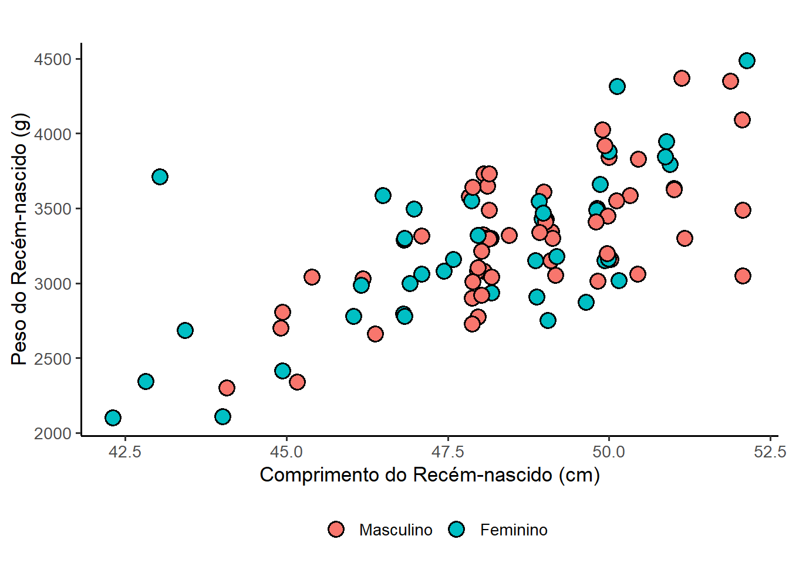
Neste caso, a variável categórica sexo foi mapeada para a estética fill. O ggplot2 atribuiu uma cor diferente para cada sexo e criou uma legenda automaticamente (Figura 8.8). No exemplo da Figura 8.7, foi mostrado que quando a cor for única, o mapeamento da mesma se dá dentro do geom_point().
Atenção!
Se estiver usando shape que não aceita preenchimento (como 16 ou 19), então deve-se usar color = sexo e scale_color_manual().
Exercício
O que acontece se a cor determinada por uma variável categórica (fill = sexo ou color= sexo) for colocada fora do aes()?
Resposta5
8.4.6.2 Paletas de Cores
Para ter controle total sobre as cores, deve-se usar funções de escala (scale). Existem diferentes funções de escala para variáveis categóricas e numéricas. Na Figura 8.8, o ggplot2 definiu as cores automaticamente. Agora, as cores serão personalizadas, usando a função scale_color_manual() (Figura 8.9).
ggplot(dadosRNT100,
aes(x = compRN, y = pesoRN, fill = sexo)) +
geom_point(position = position_jitter(width = 0.2, height = 0),
shape = 21,
color = "gray20",
size = 4,
stroke = 1) +
scale_fill_manual(values = c(Masculino = "cyan",
Feminino = "pink3")) +
labs(title="",
x = "Comprimento do Recém-nascido (cm)",
y = "Peso do Recém-nascido (g)",
fill = "") +
theme_classic(base_size = 13) +
theme(legend.position = "bottom")
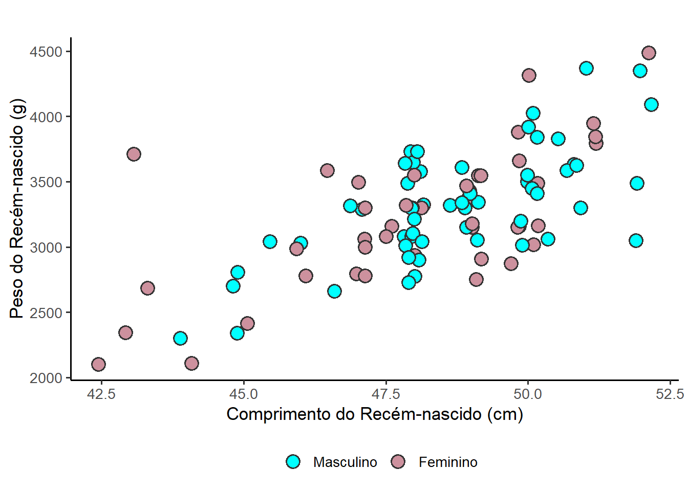
Observar que, na Figura 8.8, os pontos que representam os meninos estavam cor rosa e as meninas com cor azul. Na figura Figura 8.9, isto foi modificado manualmente. Para realizar o mesmo processo, é muito comum usar pacotes de paletas de cores.
8.4.6.2.1 Pacote ggsci
O ggsci é um pacote que oferece uma coleção de paletas de alta qualidade inspiradas em cores usadas em revistas científicas, bibliotecas de visualização de dados, filmes de ficção científica e programas de TV. As paletas de cores no ggsci estão disponíveis como escalas ggplot2, Para todas usa-se as seguintes funções:
scale_color_nomedapaleta()escale_fill_nomedapaleta ().
Por exemplo, para a paleta do Lancet, usa-se para o preenchimento: scale_fill_lancet() . O pacote ggsci deve ser instalado e carregado para usar estas paletas.
Para visualizar as opções do pacote ggsci acessar Scientific Journal and Sci-Fi Themed Color Palettes for ggplot2.
Como exemplo, será usado o código que gerou o gráfico da Figura 8.9 com alterações, usando a paleta do periódico Lancet.
library(ggsci)
ggplot(dadosRNT100,
aes(x = compRN, y = pesoRN, fill = sexo)) +
geom_point(position = position_jitter(width = 0.2, height = 0),
shape = 21,
color = "gray20",
size = 4,
stroke = 1) +
scale_fill_lancet(alpha = 0.6) +
labs(title="",
x = "Comprimento do Recém-nascido (cm)",
y = "Peso do Recém-nascido (g)",
fill = "") +
theme_classic(base_size = 13) +
theme(legend.position = "bottom")
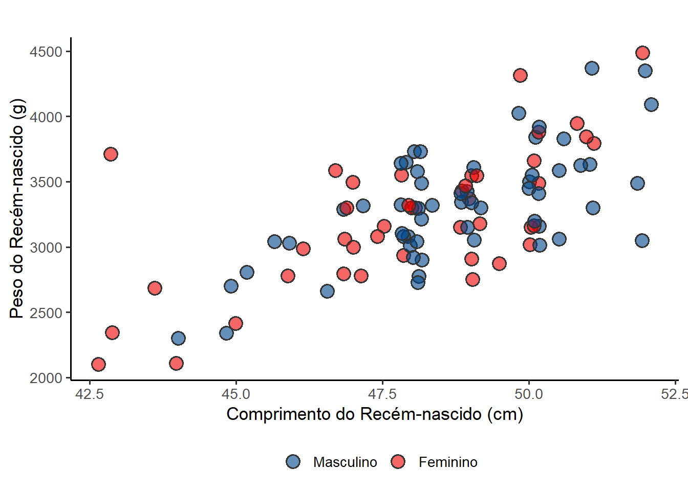
As cores usadas são agora as da paleta do Lancet (Figura 8.10). Como eles são muito vivas e para que aparecesse que o ponto foi preenchido, foi utilizada uma transparência de alpha = 0.6. A paleta do Lancet pode ser visualizada com a função show_col(pal_lancet())(Figura 8.11)
library(ggsci)
show_col(pal_lancet())
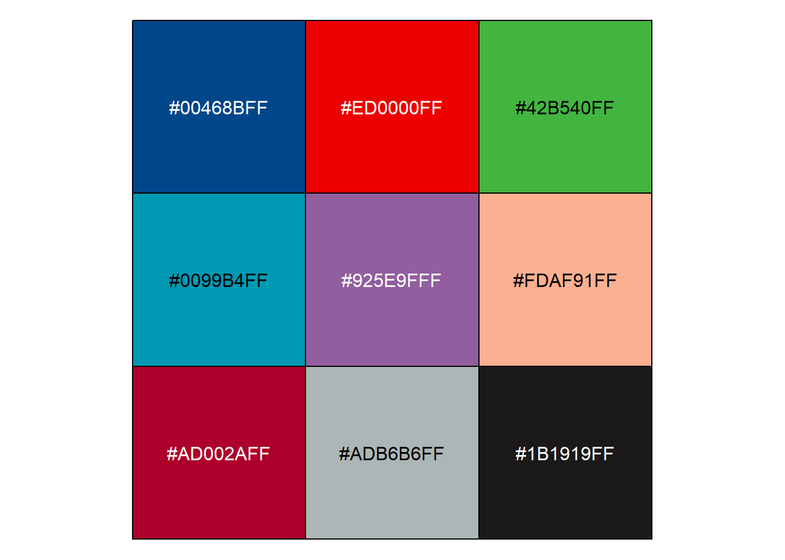
Exercício
Visualizar outras paletas do pacote ggsci, usando a função show_col() do pacote scales. Por exemplo:
show_col(pal_jama())
show_col(pal_bmj())
show_col(pal_aaas())
show_col(pal_simpsons())
8.4.6.2.2 Pacote RColorBrewer
Existem outros pacotes, como o RColorBrewer, que oferecem paletas visualmente agradáveis e podem facilmente ser exploradas. Por alguns, é considerado uma ferramenta indispensável para gerenciar cores com R (Holtz 2025). Para visualizar (Figura 8.12) as paletas do pacote RColorBrewer.
library(RColorBrewer)
par(mar=c(2, 4, 2, 3)) # modifica o tamanho das margens
display.brewer.all()
par(mar=c(5.1, 4.1, 4.1, 2.1)) # retorna ao tamanho original das margens
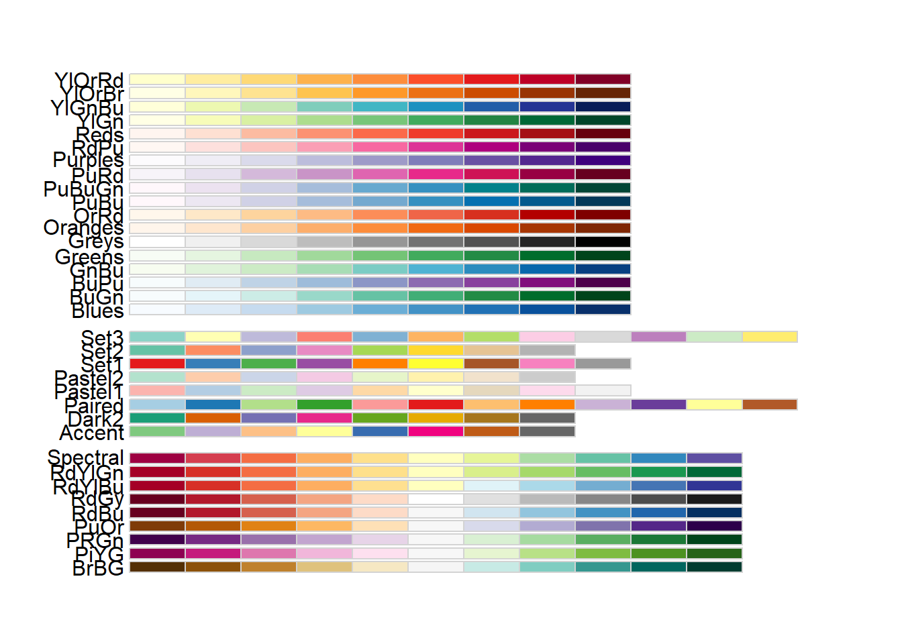
Como exemplo, será repetido o gráfico da Figura 8.10 com uma paleta de cores do RColorBrewer, Pastel2.
ggplot(dadosRNT100,
aes(x = compRN, y = pesoRN, fill = sexo)) +
geom_point(position = position_jitter(width = 0.2, height = 0),
shape = 21,
color = "gray20",
size = 4,
stroke = 1) +
scale_fill_brewer(palette = "Pastel2") +
labs(title="",
x = "Comprimento do Recém-nascido (cm)",
y = "Peso do Recém-nascido (g)",
fill = "") +
theme_classic(base_size = 13) +
theme(legend.position = "bottom")
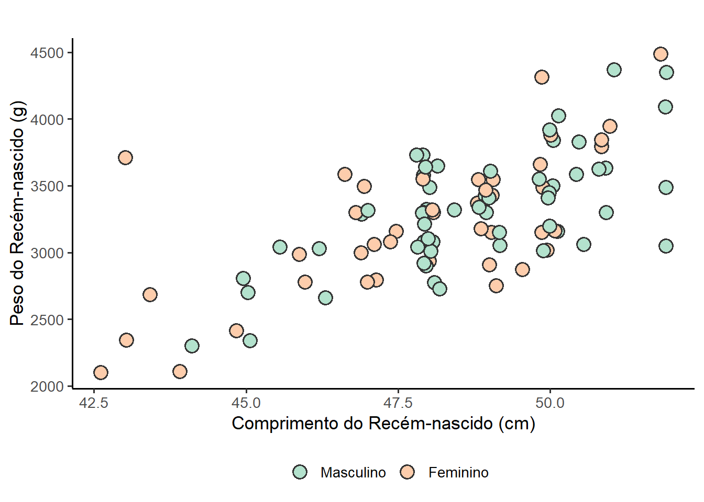
8.4.6.2.3 Paleta paletteer
O pacote paletteer no R reúne um grande número de paletas de cores de diversos pacotes do R dedicados a cores. Fornece uma interface simples e consistente para acessar essas paletas, facilitando o trabalho. Oferece mais de 2000 paletas de cores de vários pacotes do R, como ggthemes, wesanderson, lisa, scico, entre outros. Tudo acessível por uma interface simples e poderosa, facilitando a criação de visualizações bonitas e informativas (Hvitfeldt 2024).
Todas as paletas podem ser acessadas a partir das três funções paletteer_c(), paletteer_d() e paletteer_dynamic() usando a sintaxe: nome_do_pacote::nome_da_paleta 6.
Paletas discretas são paletas com um número fixo de cores. Elas são úteis para visualizar dados categóricos. Por exemplo, uma paleta que vai do vermelho ao laranja, do verde ao preto é uma paleta discreta.
Exemplo com a paleta nbapalettes::supersonics_holiday, mapeando os pontos em um tamanho maior (size = 7) para chamar atenção das cores.
library(paletteer)
ggplot(dadosRNT100,
aes(x = compRN, y = pesoRN, fill = sexo)) +
geom_point(position = position_jitter(width = 0.2, height = 0),
shape = 21,
color = "gray20",
size = 6,
stroke = 1.5) +
scale_fill_paletteer_d("nbapalettes::supersonics_holiday") +
labs(title="",
x = "Comprimento do Recém-nascido (cm)",
y = "Peso do Recém-nascido (g)",
fill = "") +
theme_classic(base_size = 13) +
theme(legend.position = "bottom")
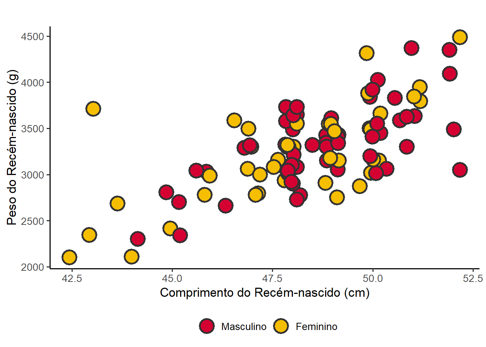
Para uma visualização rápida de algumas paletas com o paleteteer, pode-se digitar em um script do RStudio ou do Positron o seguinte comando:
paletteer::paletteer_d("lisa::FridaKahlo")<colors>
#121510FF #6D8325FF #D6CFB7FF #E5AD4FFF #BD5630FF paletteer::paletteer_d("nbapalettes::supersonics_holiday")<colors>
#D50032FF #F6BE00FF #00573FFF #010101FF No console, aparecerão as cores com os códigos hexadecimais. Se as cores não estiverem visíveis como aqui, então acesse o website HTML Coloe Codes, onde facilente é feita essa conversão.
Isto é apenas o caminho, existem uma enorme quantidade de paletas (mais de 2500 paletas!) e o paletteer é uma espécie de facilitador para se ter acesso a elas. Escolher as cores para um gráfico é uma tarefa desafiadora e demorada, o que geralmente leva à insatisfação.Em um dos seus sites educacionais Yan Holtz disponibiliza um localizador de paletas de cores que torna este trabalho mais palatável.
8.4.7 Facetamento
Na Seção 8.4.6, foi mostrado como comparar grupos, através da cor, usando as estéticas fill ou color 7. Outra técnica para diferenciar grupos em um gráfico é o facetamento. O facetamento cria gráficos dividindo os dados em subconjuntos e exibindo o mesmo gráfico para cada subconjunto (Figura 8.15) . Para facetar um gráfico, basta adicionar uma especificação de facetamento com a função facet_wrap(), que recebe o nome de uma variável categórica precedido pelo sinal gráfico til (~).
Como exemplo prático, será aproveitado o código que gerou a Figura 8.14 com pequenas alterações 8 e aplicação do facet_wrap().
ggplot(dadosRNT100,
aes(x = compRN, y = pesoRN)) +
geom_point(position = position_jitter(width = 0.2, height = 0),
shape = 21,
fill = "tomato",
color = "gray20",
size = 4,
stroke = 1) +
labs(x = "Comprimento do Recém-nascido (cm)",
y = "Peso do Recém-nascido (g)") +
theme_bw(base_size = 13) +
facet_wrap(~sexo)
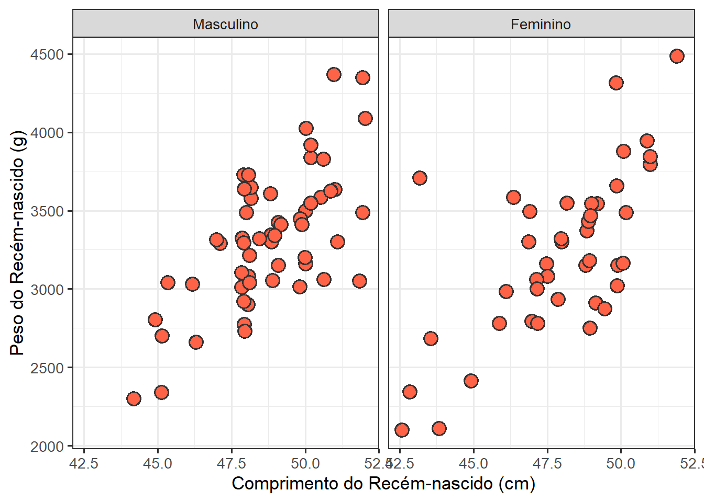
O facetamento (Figura 8.15) permite verificar que a relação entre o comprimento e o peso dos recém-nascidos é nitidamente linear e semelhante entre os sexos.
8.4.8 Reta de Regressão
A função geom_smooth() é uma forma geométrica do ggplot2 usada para visualizar tendências ou padrões entre duas variáveis numéricas. Ele adiciona uma linha suavizada ao gráfico, que ajuda a entender a relação entre os dados , especialmente quando há muitos pontos ou quando a relação não é linear. O geom_smooth() ajusta uma curva aos dados, usando métodos estatísticos. A regressão linear usa method = “lm” 9. Por padrão, exibe o intervalo de confiança (veja Capítulo 12), que mostra a incerteza da estimativa da reta. Esta técnica ajuda a identificar padrões que não podem ser visíveis apenas com os pontos brutos.
O código da figura Figura 8.10 será tomado como base sem a divisão por sexo 10, com modificações, para gerar a reta de regressão.
library(ggsci)
ggplot(dadosRNT100,
aes(x = compRN, y = pesoRN)) +
geom_point(position = position_jitter(width = 0.2, height = 0),
shape = 21,
fill = "tomato",
color = "gray20",
size = 4,
stroke = 1) +
geom_smooth(method = "lm",
se =TRUE,
color= "darkred") +
scale_fill_lancet(alpha = 0.6) +
xlab("Comprimento do Recém-nascido (cm)") +
ylab("Peso do Recém-nascido (g)") +
theme_bw(base_size = 13)`geom_smooth()` using formula = 'y ~ x'
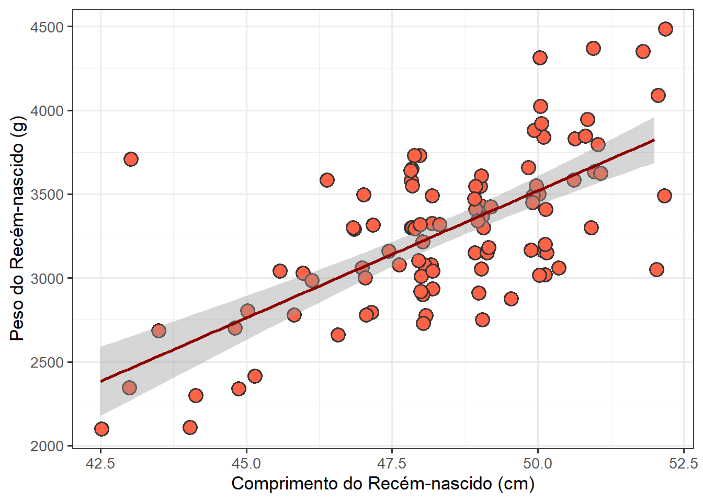
O gráfico da Figura 8.16, mostra um ajuste dos pontos a uma reta, com inclinação ascendente, ou seja uma correlação positiva, à medida que o comprimento do recém-nascido aumenta, aumenta o seu peso ao nascer. Pela forte inclinação da reta. pressupoe-se que esta correlação é alta.
A distância dos pontos à reta é o erro ou resíduo. A melhor reta ajustada é aquela em que a soma dos quadrados da distância de cada ponto (soma dos quadrados residual) em relação à reta é minimizada (veja também Capítulo 18).
8.5 Histograma
O histograma é uma ferramenta gráfica que fornece informações sobre o formato da distribuição e dispersão dos dados, permitindo verificar se existe ou não simetria. É usado para dados contínuos.
No histograma, as frequências observadas são representadas por intervalos de classes de ocorrência que estão no eixo x e a altura das barras, representando a frequência de cada intervalo, no eixo y. A área de cada barra é proporcional à porcentagem de observações de cada intervalo. O geom_histogram() é a geometria para a construção de um histograma. Aqui, há necessidade apenas do eixo x, pois existe uma única variável. A execução do comando retorna a distribuição dessa variável.
Os dados para plotar um histograma, serão provenientes do dataframe dados (Seção 8.2), utilizando um filtro para as gestações a termo, designado como dadosRNT.
set.seed(123)
dadosRNT <- dados %>%
filter(ig >= 37 & ig < 42) Será construído um histograma simples da variável pesoRN (peso dos recém-nascidos a termo), usando os eguinte código:
ggplot(dadosRNT, aes(x=pesoRN)) +
geom_histogram()+
labs(x = " Peso dos Recém-Nascidos (g)",
y = "Frequência") +
theme_bw(base_size = 13)
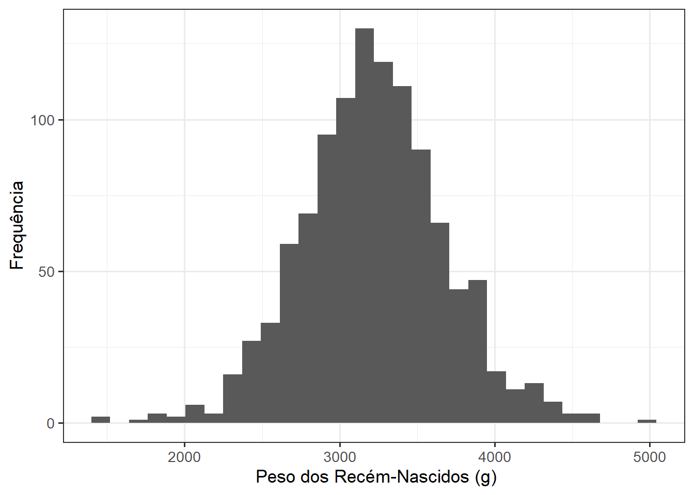
A aparência do histograma da Figura 8.17 permite ter uma idéia da distribuição e simetria dos dados, mas não está com um aspecto agradável, amigável. Mesmo que ele expresse corretamente a sua mensagem, essa mensagem pode ser prejudicada por uma má aparência.
O histograma recebe uma variável numérica (no caso, o peso dos recém-nascidos) e a divide em vários “compartimentos”, os intervalos, representados pelas barras. A escolha do tamanho (amplitude) do intervalo é de extrema importância para a aparência do histograma.
O geom_histogram() tem um argumento, denominado binwidth que permite alterar a amplitude do intervalo. O binwidth é um intervalo e sua unidade é igual a da variável que se está “histogramando”. No exemplo, foi usado o peso do recém-nascido (g). Se o objetivo são intervalos de 200 em 200 gramas, o binwidth = 200. Uma outra maneira, é usar bins que agrupa em intervalos de mesmo tamanho. Por exemplo bins = 15, o geom_histogram() dividirá em 15 intervalos iguais, gerando um histograma semelhante ao da Figura 8.18. Junto com a alteração dos intervalos, vamos modificar a cor de preenchimento (fill) e bordas (color) das barras (Figura 8.18 ).
ggplot(dadosRNT, aes(x=pesoRN)) +
geom_histogram(binwidth = 200,
fill = "chartreuse",
color = "darkgreen")+
labs(x = "Peso dos Recém-Nascidos (g)",
y = "Frequência") +
theme_bw(base_size = 13)
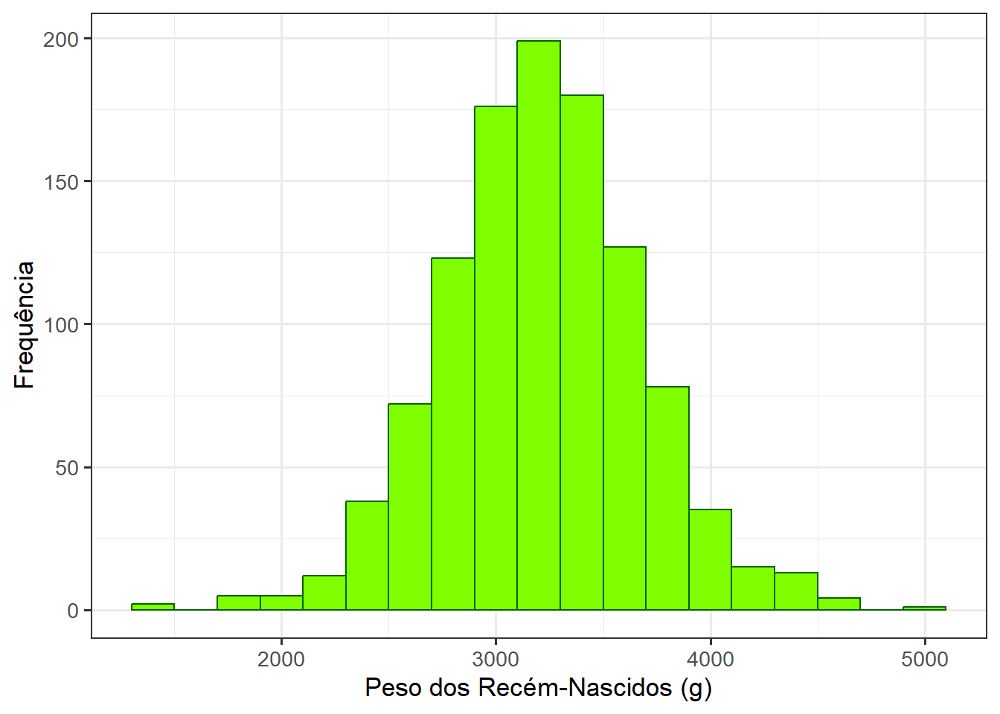
Com frequência se observa um histograma com curva normal sobreposta (Figura 8.19) para facilitar a comparação dos dados com a distribuição normal. Isso pode ser conseguido com um código que usa função stat_function() para a construção da curva normal, baseada nos dados (média e desvio padrão da variável pesoRN) e a função after_stat(density), colocada na estética do histograma, no eixo y, para substituir a frequência pela densidade de probabilidade (veja Seção 9.6). O restante do código somente estabelece que a linha da curva será tracejada (linetype = “dashed”), de cor vermelha (color = “red”) e com tamanho 1 (linewidth = 1).
library(ggplot2)
library(dplyr)
ggplot(dadosRNT) +
geom_histogram(aes(x = pesoRN,
y = after_stat(density)),
binwidth = 200,
fill = "chartreuse",
colour = "darkgreen") +
stat_function(fun = dnorm,
args = list(mean = mean(dadosRNT$pesoRN),
sd = sd(dadosRNT$pesoRN)),
linetype = "dashed",
linewidth = 1,
color = "red") +
labs(x = "Peso do Recém-Nascido (g)",
y = "Densidade de Probabilidade") +
theme_bw(base_size = 13)
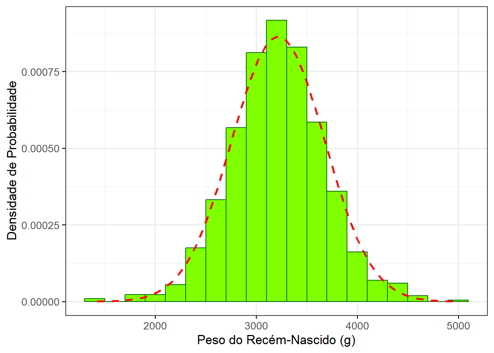
Na Figura 8.19, se observa que os pesos dos recém-nascidos se ajustam razoavelmente à curva normal.
8.6 Boxplot
O boxplot é uma representação gráfica de um resumo eficaz, de fácil compreensão, de uma ou mais varáveis numéricas. Fornece uma análise visual da posição, dispersão, simetria, caudas e valores discrepantes (outliers) do conjunto de dados (Figura 8.20).
Posição – Em relação à posição dos dados, observa-se a linha central do retângulo (a mediana ou segundo quartil).
Dispersão – A dispersão dos dados pode ser representada pelo intervalo interquartil (IIQ), tamanho da caixa, que é a diferença entre o terceiro quartil (3ºQ) e o primeiro quartil (1ºQ), ou ainda pela amplitude que é calculada da seguinte maneira: valor máximo – valor mínimo. Embora a amplitude seja de fácil entendimento, o intervalo interquartil é uma estatística mais robusta para medir variabilidade uma vez que não sofre influência de outliers.
Simetria – Um conjunto de dados que tem uma distribuição simétrica, terá a linha da mediana no centro do retângulo. Quando a linha da mediana está próxima ao primeiro quartil, os dados são assimétricos positivos e quando a posição da linha da mediana é próxima ao terceiro quartil, os dados são assimétricos negativos. Vale lembrar que a mediana é a medida de tendência central mais indicada quando os dados possuem distribuição assimétrica, uma vez que a média aritmética é influenciada pelos valores extremos.
Caudas – As linhas que vão do retângulo até aos outliers podem fornecer o comprimento das caudas da distribuição.
Valores atípicos (Outliers) – Os valores atípicos indicam possíveis valores discrepantes. No boxplot, as observações são consideradas atípicas quando estão abaixo ou acima dos limites superior e inferior. O limite de detecção de valores atípicos (outliers) é construído utilizando o intervalo interquartil, dado pela distância entre o primeiro e o terceiro quartil. Sendo assim, os limites inferior e superior de detecção de outlier são dados por:
o Limite Inferior: 1ºQ – (1,5 * IIQ);
o Limite Superior: 3ºQ + (1,5 * IIQ). Tanto o limite superior como o inferior são representados por (º).
os Valores extremos: são valores que estão acima ou abaixo de 3 vezes o IIQ e são representados por (*).

Os boxplots são construídos com o geom_boxplot(). Deve-se especificar uma variável quantitativa para o eixo y e uma variável qualitativa para o eixo x (grupo). Se não houver, variável x e tem-se apenas um vetor de valores numéricos, então, ignora-se a variável x.
Para o exemplo de construção de um boxplot, será usada a variável pesoRN do conjunto de dados dadosRNT00 carregados na Seção 8.3.1.
ggplot(dadosRNT100,
aes(x = "", y = pesoRN)) +
geom_boxplot(fill = "skyblue", alpha = 0.6) +
labs (x = NULL, y = "Peso do Recém-nascido (g)") +
theme_bw(base_size = 13)
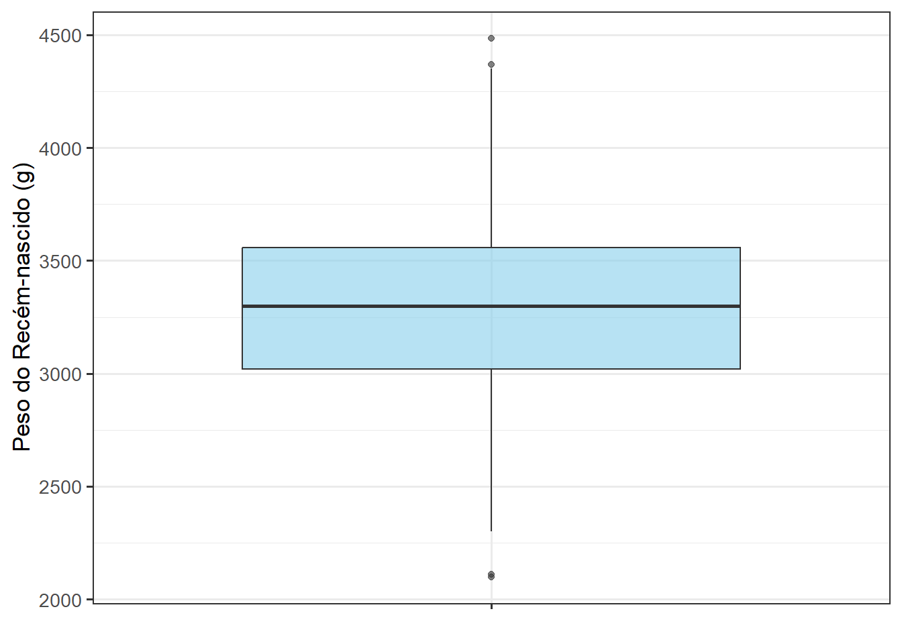
O geom_boxplot() vazio gera um gráfico sem cores. Colocando o preenchimento fill = “skyblue”,tem-se um boxplot de cor azul céu (Figura 8.21).
Na aparência do boxplot , é clássico o seu formato com os “bigodes” terminando em “T”, como mostra a Figura 8.20, e não um traço simples. Para modificar isso, pode-se criar uma nova camada de barra de erro, usando a função geom_errorbar(), antes de geom_boxblot(). Assim, como o boxplot passa ser a camada mais superficial, ele impede que se visualize a barra de erro na caixa (Figura 8.22), desde que ele seja opaco (remover ou zerar o argumento alpha). A função geom_errorbar() normalmente é usada para barras de erro, no entanto, aqui ela está sendo utilizada com stat = "boxplot" 11, o que significa que os cálculos de estatística do boxplot serão aplicados à barra de erro. O argumento width = 0.1 ajusta a largura das barras de erro, tornando-as mais estreitas.
ggplot(dadosRNT100,
aes(x = "", y = pesoRN)) +
geom_errorbar(stat = "boxplot", width = 0.1) +
geom_boxplot(fill = "skyblue") +
labs (x = NULL, y = "Peso do Recém-nascido (g)") +
theme_bw(base_size = 13)
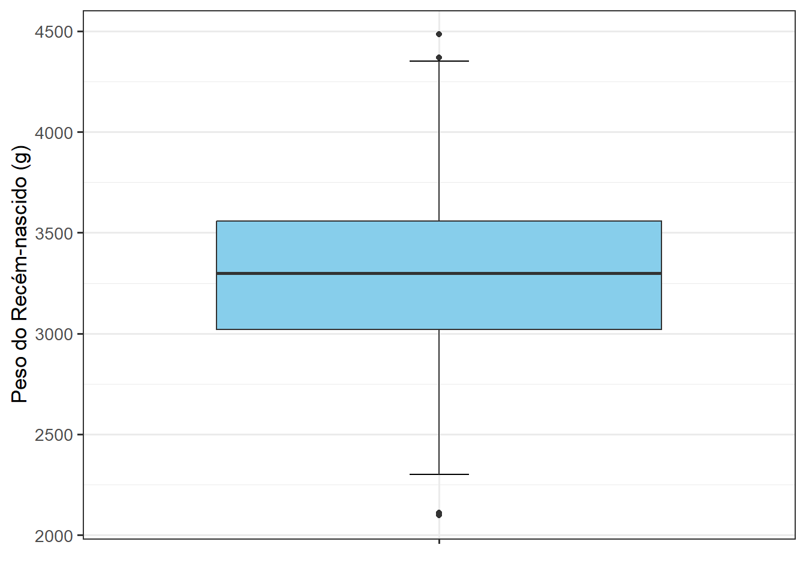
8.6.1 Múltiplos boxplots
Os boxplots são bastante úteis quando se compara dois grupos, tornando-se uma ferramenta conveniente para compreender rapidamente as diferenças entre esses grupos. Ao usar os boxplots para comparar grupos, deve-se ter cuidado, pois os resumos podem levar à perda de informação que pode induzir erros de interpretação. Considere os boxplots da Figura 8.23, comparando o comprimentos de recém-nascidos a termo masculinos e femininos, a mediana dos meninos é mais alta do a das meninas. As meninas apresentam a mediana fora do centro das caixas, indicando um certo grau de assimetria. Mesmo sendo possível obter informações importantes sobre os dados, usando um boxplot, não se pode discernir a distribuição subjacente dos pontos de dados individuais dentro de cada grupo ou o número total de observações.
As cores dos boxplots serão definidas manualmente dentro do geom_boxplot(). Além disso, será adicionada a função theme(legend.postion= "none) para remover a legenda, pois ela é redundante neste gráfico, uma vez que os sexos já estão mencionados no eixo x.
ggplot(dadosRNT100, aes(x = sexo, y = compRN)) +
geom_errorbar(stat = "boxplot", width = 0.1) +
geom_boxplot(fill= c("goldenrod2", "orangered3")) +
labs(x = NULL, y = "Comprimento dos Recém-Nascidos (cm)") +
theme(legend.postion= "none") +
theme_bw(base_size = 13)
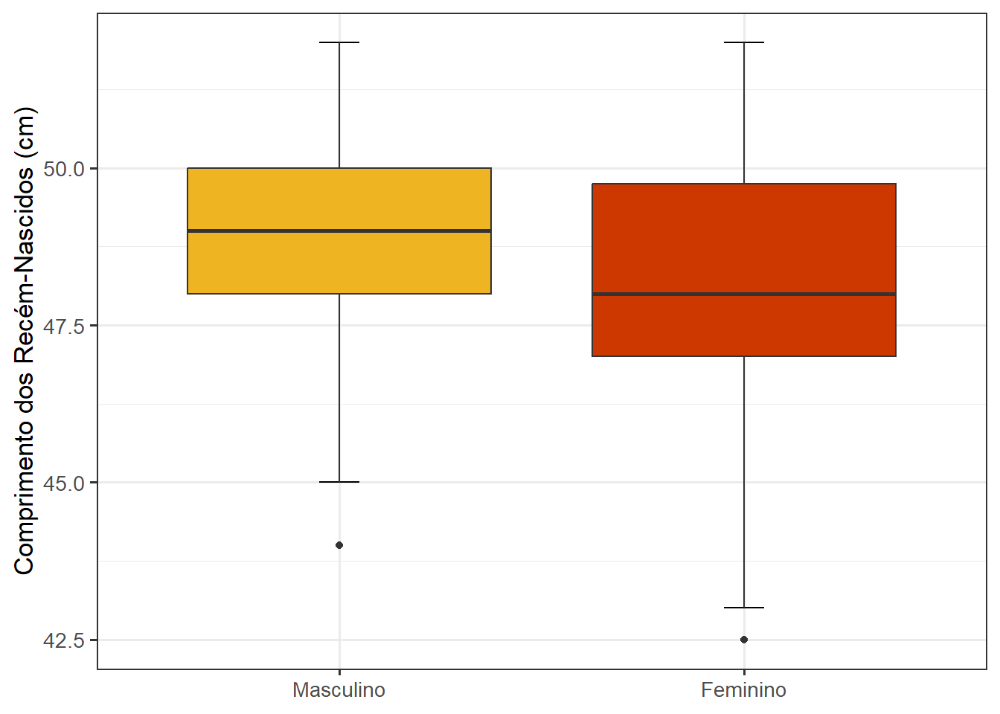
Se necessários mais informações, é possível adicionar jitter12 no boxplot da (Figura 8.24) para torná-lo mais esclarecedor e visualizar melhor a distribuição dos dados.
ggplot(dadosRNT100, aes(x = sexo, y = compRN)) +
geom_errorbar(stat = "boxplot", width = 0.1) +
geom_boxplot(fill= c("goldenrod2", "orangered3")) +
geom_jitter(color="grey30", size=1.5) +
labs(x = NULL, y = "Comprimento dos Recém-Nascidos (cm)") +
theme(legend.postion= "none") +
theme_bw(base_size = 13)
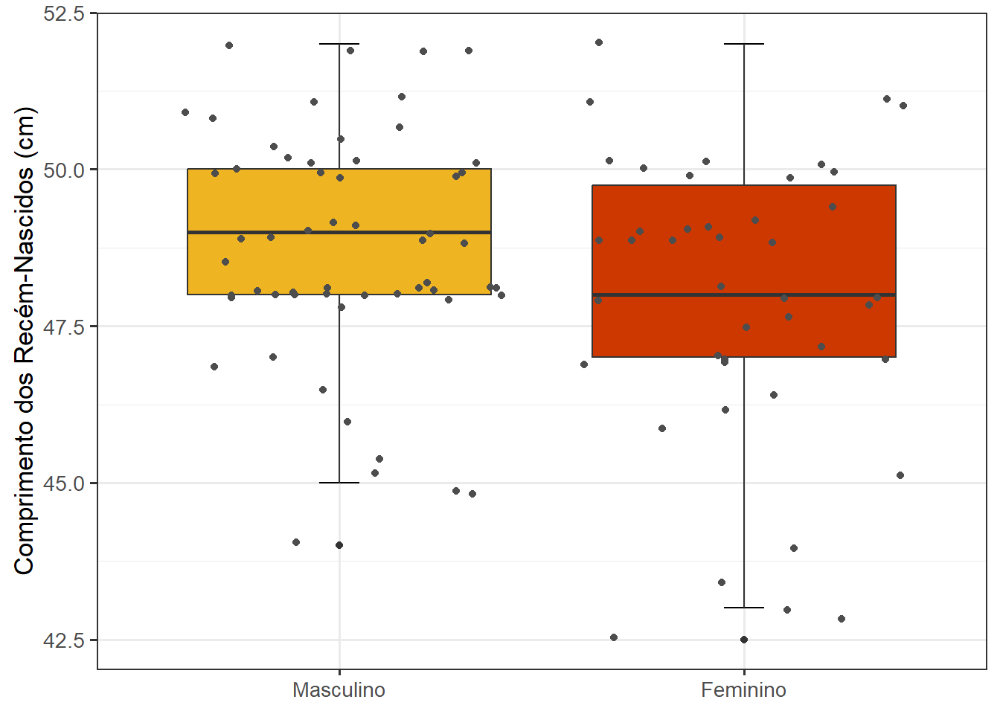
8.6.2 Boxplots horizontais
Para criar boxplots horizontais, adiciona-se a função coord_flip() à função geom_boxplot() para inverter os eixos. Em um boxplot padrão, a variável categórica está no eixo x e a variável numérica no eixo y. Com coord_flip(), as variáveis são invertidas, colocando a variável categórica no eixo y e a numérica no eixo x, resultando no boxplot horizontal da Figura 8.25.
library(ggplot2)
library(dplyr)
ggplot(dadosRNT100, aes(x = sexo, y = compRN)) +
geom_errorbar(stat = "boxplot", width = 0.1) +
geom_boxplot(fill= c("goldenrod2", "orangered3")) +
coord_flip() +
labs(x = NULL, y = "Comprimento dos Recém-Nascidos (cm)") +
theme(legend.postion= "none") +
theme_bw(base_size = 13)
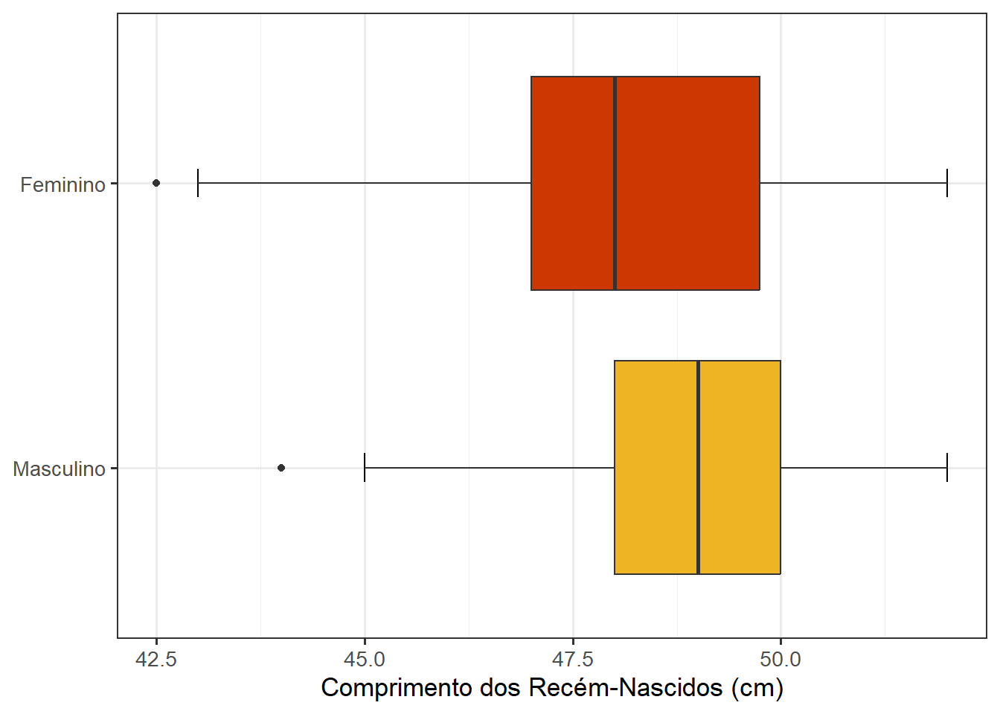
8.7 Gráfico de violino
Os gráficos de violino permitem visualizar a distribuição de uma variável numérica para um ou vários grupos. No ggplot2, são construídos com o geom_violin() e, com frequência, substituem os boxplots, principalmente, quando se tem uma amostra muito grande e usar o jitter no boxplot pode não ser eficaz, pois os pontos podem se sobrepor e tornar a figura inelegível.
Cada “violino” representa uma variável de agrupamento. A forma representa a estimativa de densidade de probabilidade da variável: quanto mais pontos de dados em um intervalo específico, mais largo será o violino para esse intervalo. É muito parecido com um boxplot, mas permite uma compreensão mais profunda da distribuição.
O gráfico de violino é uma técnica poderosa de visualização de dados, pois permite comparar a classificação de vários grupos e sua distribuição. São particularmente adequados quando a quantidade de dados é grande e é impossível mostrar observações individuais. Para conjuntos de dados pequenos, um boxplot com jitter é provavelmente uma opção melhor, pois realmente mostra todas as informações.
Para o exemplo prático, será usada uma amostra proveniente do conjunto de dados dados (veja Seção 8.2), com filtrado para as gestações a termo, dadosRNT. Serão utilizadas as variáveis pesoRN e categFumo, tabagismo entre as gestantes, de acordo com a intensidade (não fumante, fumante leve. fumante moderada, fumante pesada) . O objetivo é observar visualmente o impacto do tabagismo sobre os pesos dos recém-nascidos .
Para construir o gráfico de violino, serão usados os argumentos trim = FALSE, para não aparar as caudas, e draw_quantiles = c(0.25, 0.5, 0.75), para traçar os quartis (Figura 8.26). As cores das categoria foram definidas pelo ggplot2.
Reiterando, função theme(legend.position = "none") será colocada para evitar que a legenda das categorias apareça, uma vez que ela é explicita no gráfico.
ggplot(dadosRNT, aes(x=categFumo, y=pesoRN,
fill=categFumo)) +
geom_violin(trim = FALSE,
draw_quantiles = c(0.25, 0.5, 0.75)) +
labs(x = "Tabagismo Materno",
y = "Peso do Recém-Nascido (g)") +
theme_bw(base_size = 13) +
theme(legend.position = "none")
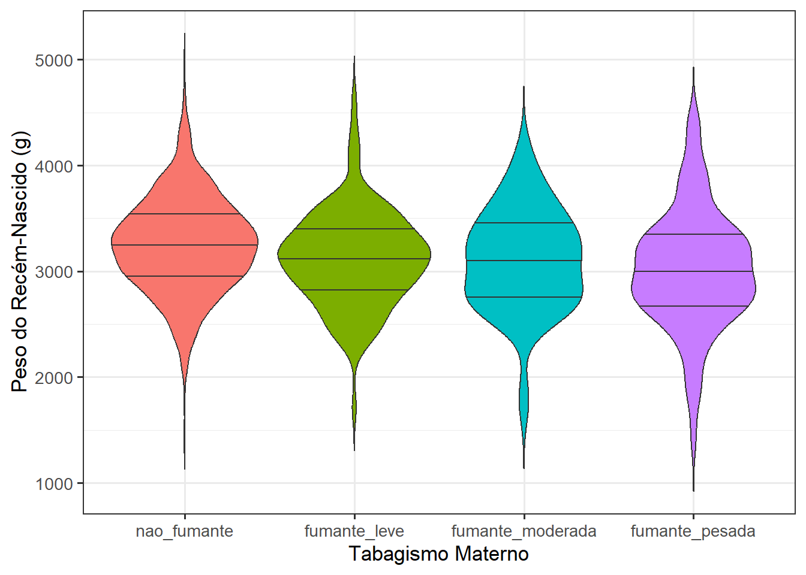
Uma alteração interessante que pode ser feita no gráfico de violino, é colocar um boxplot, dentro do mesmo (Figura 8.27), faz o efeito do argumento draw_quantiles(), usado na Figura 8.26. Facilita a interpretação e, na opinião do autor, é mais bonito e elegante. O argumento width = 0.5, na função geom_boxplot(), estabelece a largura do boxplot, evitando que o boxplot se estenda para fora do “violino”.
ggplot(dadosRNT, aes(x=categFumo, y=pesoRN, fill=categFumo)) +
geom_violin(trim = FALSE) +
geom_boxplot(width = 0.5) +
labs(x = "Tabagismo Materno",
y = "Peso do Recém-Nascido (g)") +
theme_bw(base_size = 13) +
theme(legend.position = "none")A observação da Figura 8.27 mostra uma tendência do peso do recém-nascido diminuir à medida que intensidade do fumo aumenta. O gráfico sugere que esta tendência não é sugnificativa, pois as caixas se sobrepõem.
Para obter uma versão horizontal da Figura 8.26, chama-se a função coord_flip() 13que permite inverter os eixos x e y e, assim, tornar a interpretação mais intuitiva, mais amigável (?).
Para interpretar um gráfico de violino, observar o seguinte:
Forma do violino, observando a largura em diferentes pontos para entender onde os dados se concentram.
A linha mediana e a caixa do boxplot associado indicam a mediana e o intervalo interquartil, respectivamente.
Se o violino é simétrico em torno da mediana, a distribuição dos dados é aproximadamente simétrica.
Se a parte superior do violino é mais larga, os dados podem ser assimétricos, inclinados para valores maiores.
Em múltiplas categorias, pode-se comparar rapidamente as distribuições. Diferentes formas e larguras entre as categorias fornecem uma visão clara das variações entre elas.
8.8 Gráfico de barras
O gráfico de barras é uma análogo do histograma, onde as barras, ao contrário deste, são separadas. Os gráficos de barra exibem a distribuição (frequências) de uma variável categórica através de barras verticais ou horizontais, ou sobrepostas. A função geom_bar() permite delinear o gráfico de barras da Figura 8.28.
Para os exemplos práticos, será usada uma amostra proveniente do conjunto de dados dados (Seção 8.2), manipulando as mesmas variáveis: categFumo , tabagismo materno, e categIdade , idade materna categorizada. Em outros exemplos de grágicos barras, serão usadas as variáveis fumo (fumante e não fumante), para (número de filhos anteriores) e sexo do recém-nascido.
O gráfico de barras inicial servirá para para visualizar a prevalência (Seção 22.2.1) de fumo na gestação categorizada pela intensidade do fumo.
ggplot(data = dados) +
geom_bar(aes(x = categFumo,
y = after_stat(count/sum(count))))+
labs(x = "Tabagismo Materno",
y = "Proporção por categoria") +
theme_bw(base_size = 13)
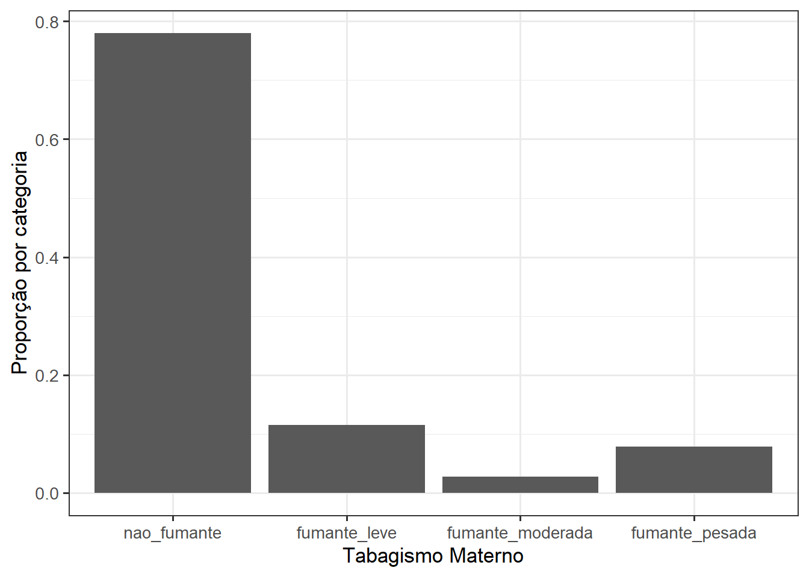
As cores de preenchimento das barras podem ser alteradas, de acordo com a variável categórica. As cores serão estabelecidas de acordo com o padrão do ggplot2 (Figura 8.29). O gráfico retornará uma legenda, mostrando o que representa cada cor. Ela é desnecessária porque fica explicito, no eixo x, o que cada barra representa. Portanto, é uma boa conduta remover a legenda com a função theme (legend.position = "none"), como já visto em outras ocasiões (boxplots e gráfico de violino):
ggplot(data = dados) +
geom_bar(aes(x = categFumo,
y = after_stat(count/sum(count)),
fill = categFumo))+
labs(x = "Tabagismo Materno",
y = "Proporção por categoria") +
theme_bw(base_size = 13) +
theme(legend.position = "none")
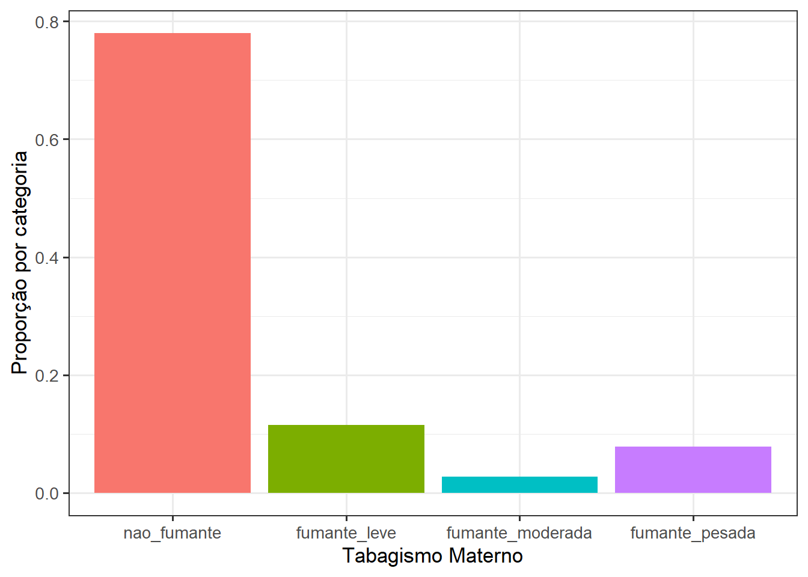
As cores padrão do ggplot2 podem ser alteradas, como foi visto na Seção 8.4.6, escolhendo manualmente, ou usando uma paleta, como as apresentadas pelo pacote ggsci, RColorBrewer ou paletteer. No exemplo, será usada a paleta do periódico New England Journal of Medicine (NEJM), Figura 8.30.
library(ggsci)
ggplot(data = dados) +
geom_bar(aes(x = categFumo,
y = after_stat(count/sum(count)),
fill = categFumo))+
scale_fill_nejm() +
labs(x = "Tabagismo Materno",
y = "Proporção por categoria") +
theme_bw(base_size = 13) +
theme(legend.position = "none")
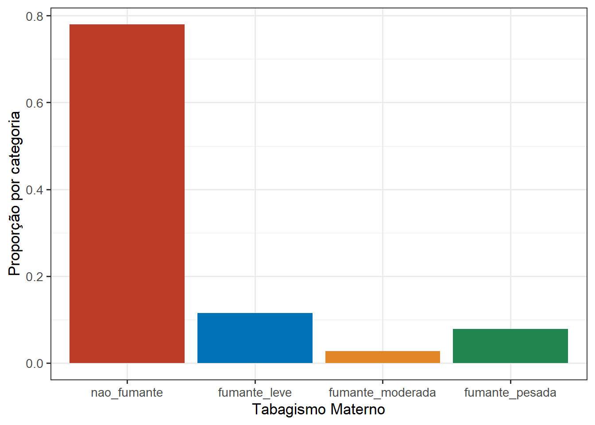
8.8.1 Proporção ou porcentagem
Na Figura 8.30, a unidade do eixo y encontra-se como uma proporção y = after_stat(count/sum(count), ou seja, y = frequência por categoria/total de observações.
É possível modificar para porcentagem (Figura 8.31), empregando a função percent_format() do pacote scales. O código é praticamente igual, apenas acrescentar o argumento labels = percent_format(accuracy = 0.1, decimal.mark = “,”) dentro da função scale_y_continuous().
library(ggsci)
library(scales)
ggplot(data = dados) +
geom_bar(aes(x = categFumo,
y = after_stat(count/sum(count)),
fill = categFumo))+
scale_fill_nejm() +
scale_y_continuous (labels = percent_format (accuracy = 0.1,
decimal.mark = ",")) +
labs(x = "Tabagismo Materno",
y = "Porcentagem por categoria") +
theme_bw(base_size = 13) +
theme(legend.position = "none")
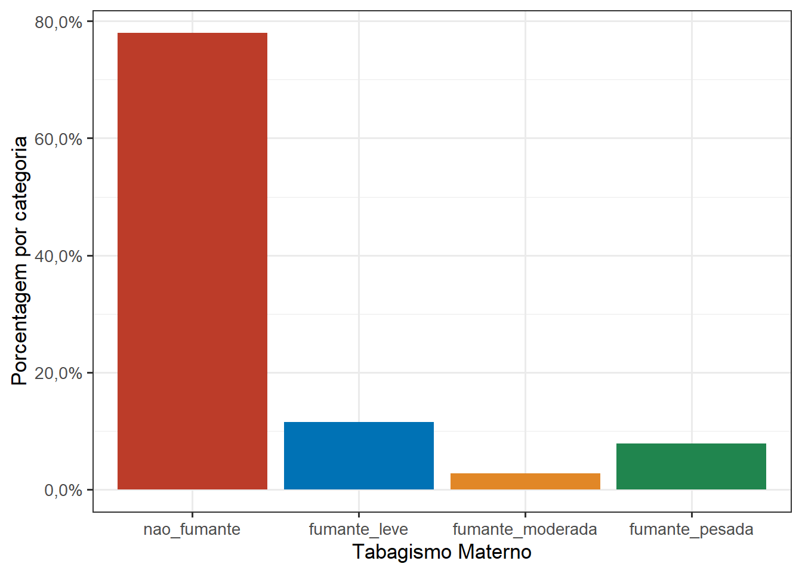
8.8.2 Controle da largura da barra com width
Para controlar a largura e o espaço entre as barras, num gráfico de barras no ggplot2, usar o argumento width dentro da função geom_bar(), definindo um valor entre 0 e 1 (ou um valor fixo). Um valor de 1 representa a largura total, ou seja, não haverá espaço entre as barras, como no histograma.
Como exemplo, será alterado a largura das barras do gráfico da figura Figura 8.30 . Se o objetivo é que as barras sejam mais estreitas e com mais espaço entre elas, deve-se definir um valor para width inferior a 0.9 (padrão). Na Figura 8.32, será usado width = 0.5.
library(ggplot2)
library(dplyr)
library(ggsci)
ggplot(data = dados) +
geom_bar(aes(x = categFumo,
y = after_stat(count/sum(count)),
fill = categFumo),
width = 0.5)+
scale_fill_nejm() +
labs(x = "Tabagismo Materno",
y = "Proporção por categoria") +
theme_bw(base_size = 13) +
theme(legend.position = "none")
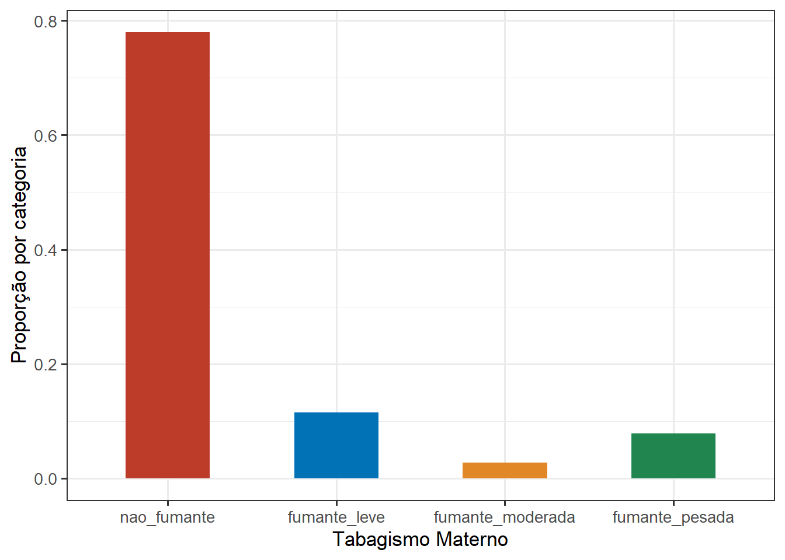
Exercício
Qual a diferença entre geom_bar() e geom_col()? Construir o mesmo gráfico de barras da Figura 8.32, usando a geom_col().
Resposta 14
8.8.3 Gráfico de barras empilhadas
O gráfico de barras empilhadas é ideal para visualizar a proporção de cada grupo dentro de uma categoria. A altura total da barra representa a contagem total para a variável no eixo x, e as cores dentro da barra mostram a distribuição da segunda variável.
Para criá-lo, mapear a primeira variável para o eixo x e a segunda variável para a estética fill. A função geom_bar() faz o empilhamento por padrão.
Com os mesmos dados, usados até nos gráficos de barras (Seção 8.2), agora serão trabalhadas as variáveis categIdade e fumo com o objetivo de ver a proporção de tabagismo por faixa etária. Como aprimoramentos, se pretende colocar as porcentagens de fumantes em cada uma das faixas etária no topo das barras.
Em primeiro lugar, calcular as proporções de fumante em cada uma das faixas etárias e a posição vertical dos rótulos no eixo y.
proporcoes_fumo <- dados %>%
group_by(categIdade, fumo) %>%
summarise(n = n(), .groups = "drop") %>%
group_by(categIdade) %>%
mutate(posicao_y = sum(n) - (0.5 * n),
total_faixa = sum(n),
proporcao_fumo = n / total_faixa) %>%
filter(fumo == "Fumante")
proporcoes_fumo# A tibble: 3 × 6
# Groups: categIdade [3]
categIdade fumo n posicao_y total_faixa proporcao_fumo
<fct> <fct> <int> <dbl> <int> <dbl>
1 < 20 anos Fumante 35 202. 219 0.160
2 20 a 35 anos Fumante 235 874. 992 0.237
3 > 35 anos Fumante 31 142. 157 0.197Após realizado o cálculo das proporções de fumantes em cada faixa etária, constrói-se o gráfico. Para colocar as porcentagens no gráfico15, será usada a geometria geom_text(), informando essas porcentagens e a localização no eixo x e y, resultando na Figura 8.33.
ggplot(dados, aes(x = categIdade, fill = fumo)) +
geom_bar(color ="black") +
scale_fill_manual(values = c("gray90","skyblue")) +
labs(x = "Faixa Etária",
y = "Frequência",
fill = NULL) +
geom_text(data = proporcoes_fumo,
aes(x = categIdade,
y = posicao_y,
label = scales::percent(proporcao_fumo, accuracy = 0.1)),
size = 4,
color = "black" ) +
scale_y_continuous (expand = expansion(add = c(0,0.05))) +
labs(x = "Faixa Etária",
y = "Frequência",
fill = NULL) +
theme_classic(base_size = 13) +
theme(legend.position = "top")
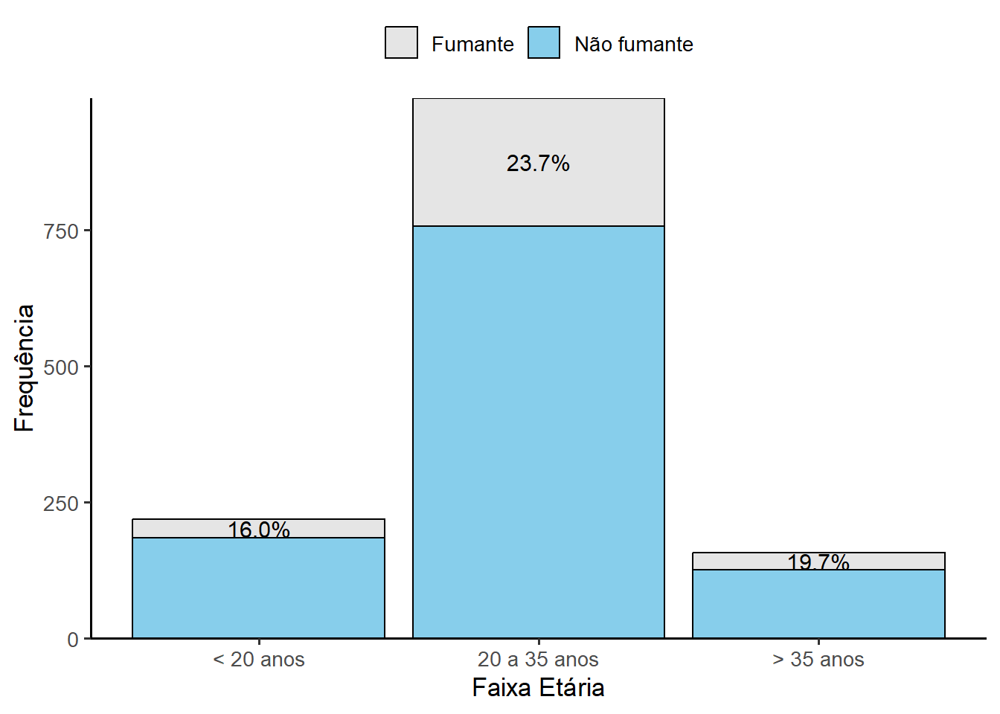
8.8.4 Gráfico de barras lado a lado
O gráfico de barras lado a lado (ou agrupado) é útil para comparar diretamente a contagem de cada grupo entre as categorias. As barras de uma mesma categoria são dispostas lado a lado para facilitar a comparação visual. Para criá-lo, se faz de maneira semelhante das barras empilhadas. Mapear a primeira variável para o eixo x e a segunda para a estética fill e adicionar o argumento position = "dodge" dentro do geom_bar(). Este argumento diz ao ggplot2 para não empilhar as barras, mas sim colocá-las lado a lado.
O geom_text () usa position_dodge() para replicar o comportamento das barras. O argumento width = 0.9 é o valor padrão para a largura das barras no ggplot2 e garante um alinhamento perfeito. O gráfico de barras lado a lado é, portanto construído assim:
- Incialmente, calcula-se as proporções das categorias e a posição y dos rótulos:
prop_fumo <- dados %>%
group_by(categIdade, fumo) %>%
summarise(n = n(), .groups = "drop") %>%
group_by(categIdade) %>%
mutate(
# Calcula a posição vertical do ponto médio de cada segmento
posicao_y = (n) - 18,
total_faixa = sum(n),
proporcao_fumo = n / total_faixa)
prop_fumo# A tibble: 6 × 6
# Groups: categIdade [3]
categIdade fumo n posicao_y total_faixa proporcao_fumo
<fct> <fct> <int> <dbl> <int> <dbl>
1 < 20 anos Fumante 35 17 219 0.160
2 < 20 anos Não fumante 184 166 219 0.840
3 20 a 35 anos Fumante 235 217 992 0.237
4 20 a 35 anos Não fumante 757 739 992 0.763
5 > 35 anos Fumante 31 13 157 0.197
6 > 35 anos Não fumante 126 108 157 0.803- Com esses dados, constrói-se o gráfico:
ggplot(dados, aes(x = categIdade, fill = fumo)) +
geom_bar(position = "dodge",
color ="black") +
scale_fill_manual(values = c("gray90","skyblue")) +
labs(x = "Faixa Etária",
y = "Frequência") +
geom_text(data = prop_fumo,
aes(x = categIdade,
y = posicao_y,
label = scales::percent(proporcao_fumo, accuracy = 0.1)),
size = 3.5,
color = "black" ,
position = position_dodge(width = 0.9)) +
scale_y_continuous (expand = expansion(add = c(0,0.10))) +
labs(x = "Faixa Etária",
y = "Frequência",
fill = "") +
theme_classic(base_size = 12) +
theme(legend.position = "top")
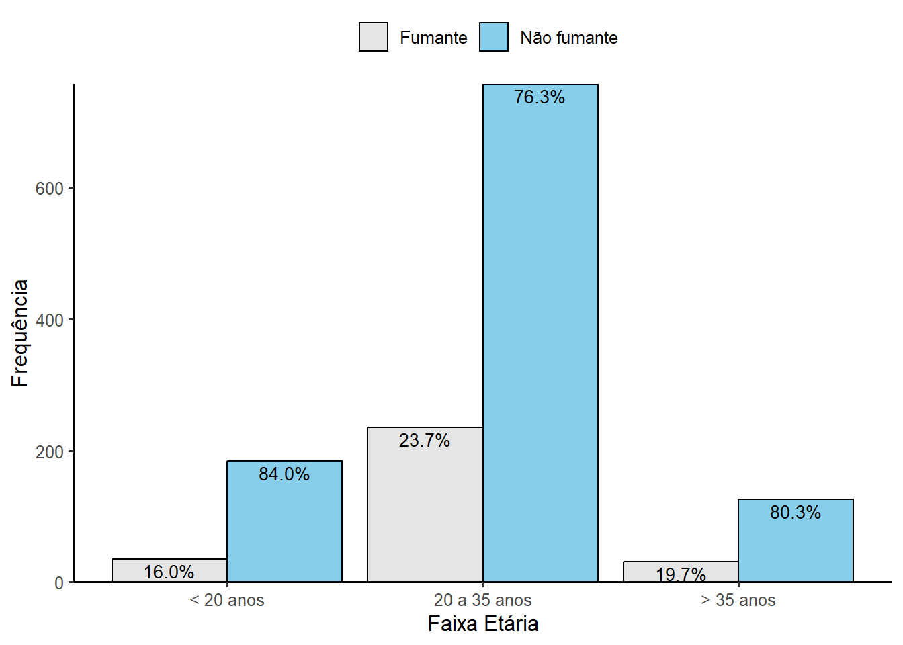
A Figura 8.34 mostra as porcentagens de fumantes em cada uma das categorias de uma forma bem clara.
8.8.5 Gráfico de barra para uma variável numérica discreta
Uma variável numérica discreta é um tipo de variável que assume valores inteiros, resultantes de contagens, e que não podem assumir valores fracionários entre eles. A medição ocorre através da contagem das observações (Seção 2.5). Para a representação gráfica, utiliza-se um gráfico de barras . O resultado é semelhante a um histograma com as barras separadas. Para o exemplo, serão usados os mesmos dados empregados na construção dos gráficos de barras empilhadas e lado a lado, provenientes do conjunto de dados dadosMater.xlsx. Nesses dados, existe a variável para que representa o número de filhos que a gestante teve antes do atual. É uma variável numérica discreta que será mostrada visualmente por gráfico de barras simples (Figura 8.35).
Importante
Apesar da variável para ser uma variável numérica discreta, para a construção do gráfico ela foi transformada em um fator para informar ao ggplot2 que todos os rótulos do eixo x (nº de filhos anteriores) devem aparecer, inclusive o referente a 7 filhos anteriores, apesar de não existir na amostra.
# Criar uma tabela com contagem completa, incluindo zeros
contagem <- as.data.frame(table(factor(dados$para, levels = 0:11)))
# Calcular proporção de cada barra
contagem$prop <- contagem$Freq / sum(contagem$Freq)
# Plotar
ggplot(contagem, aes(x = Var1, y = prop)) +
geom_bar(stat = "identity",
fill = "tomato", color = "gray30") +
geom_text(aes(label = scales::percent(prop, accuracy = 0.1),
y = prop + 0.01), size = 3.5, color = "black") +
scale_y_continuous (expand = expansion(add = c(0,0.05))) +
labs(x = "Número de filhos anteriores ao atual",
y = "Proporção") +
theme_classic(base_size = 13)
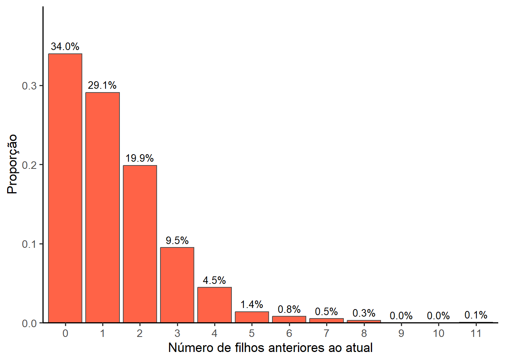
8.8.6 Gráfico de barra de erro
Um gráfico de barra de erro é uma ferramenta visual que mostra a variabilidade de dados em um ponto específico. Ele consiste em pontos ou barras que representam as médias (ou outras estatísticas) de um conjunto de dados, com linhas verticais (ou horizontais) que indicam o intervalo de confiança, o desvio padrão ou o erro padrão da média. Essas linhas verticais são conhecidas como “barras de erro”. Usado para comparar as médias de diferentes grupos, mostrando a variabilidade dentro de cada grupo. É visto com frequência em pesquisas científicas e publicações para apresentar os resultados experimentais com suas respectivas variabilidades. As barras de erro dão uma ideia geral de quão precisa é uma medição. O cenário para a construção de um gráfico de barra de erro é o tabagismo na gestação e o peso dos recém-nascidos, onde as barras representarão a média do peso ao nascer (g) e as barras de erro com intervalo de confiança de 95% (veja Capítulo 12), calculado usando média \(\pm\) margem de erro, onde a margem de \(erro = 1.96 × erro \ padrão\).
- Resumo dos dados: Após carregar os dados necessários (
dadosRNT), se fará um resumo dos mesmos que informará as respectivas médias, desvios padrão e margens de erro por grupo.
resumo <- dadosRNT %>%
group_by(sexo, fumo) %>%
summarise(n = n(),
media = mean(pesoRN, na.rm = TRUE),
dp = sd(pesoRN, na.rm = TRUE),
me = 1.96 * dp/sqrt(n),
min =min(pesoRN, na.rm = TRUE),
max =max(pesoRN, na.rm = TRUE),
.groups = 'drop')
print(resumo)# A tibble: 4 × 8
sexo fumo n media dp me min max
<fct> <fct> <int> <dbl> <dbl> <dbl> <dbl> <dbl>
1 Masculino Fumante 122 3162. 464. 82.4 1440 4410
2 Masculino Não fumante 470 3303. 453. 40.9 1425 4950
3 Feminino Fumante 110 2998. 503. 94.1 1715 4620
4 Feminino Não fumante 383 3190. 435. 43.6 2090 4485Construção do gráfico (Figura 8.36) , conforme explicado abaixo:
a) O gráfico inicia com a colocação a variável
sexono eixo x e média da variávelpesoRNno y e estabelecendo cores diferentes para o fatorsexo;b)
geom_bar(stat = “identity”usa os valores reais da média para a altura das barras,color = “black”estabelece a cor preta para o contorno das barras eposition_dodge(0.9)separa as barras lado a lado para cada grupo defumo;c)
geom_point (position = position_dodge(0.9)adiciona um ponto sobre cada barra (pode ser útil para destacar a média). É opcional;d)
geom_errorbar()adiciona a barra de erro acima da média, com base na barra de errome. Poderia ter sido usado o desvio padrão. O erro está opcionalmente colocado acima da barra, mas poderia ser acima e abaixo ;e)
labs()define os rótulos dos eixos e da legenda;f)
coord_cartesian(ylim = c(0, 3500))limita o eixo y de 0 a 3500, sem cortar dados fora desse intervalo. Entretanto, para reduzir a altura das barras, pode-se cortar dados, por exemplo começar em1000, 1500 ou, mesmo, 2000, uma vez que não existem recém-nascidos, nesta amostra, com menos de 2000 g e o foco é a média e o IC95%;g)
scale_fill_manual(values = c("gray80","darkslategray1"))estabelece as cores para os níveis defumo;h)
scale_y_continuous( breaks = seq(0, 3500, 500) , expand = expansion(add = c(0, 0.05)))- a primeira parte define os rótulos do eixo y de 500 em 500, começando em 0 16, a segunda adiciona um pequeno espaço acima das barras para não cortar os rótulos (adiante será discutido sobre isso);i) Por último colocou o tema clássico17 do
ggplot2com fonte maior para melhorar a leitura.
ggplot(resumo, aes(x=sexo, y=media, fill=fumo)) +
geom_bar(stat="identity", color="black",
position=position_dodge(0.9)) +
geom_point(position=position_dodge(0.9)) +
geom_errorbar(aes(ymin = media, ymax = media+me), width=0.2,
position=position_dodge(.9)) +
labs(x="",
y = "Peso do Recém-Nascido(g)",
fill = "") +
coord_cartesian(ylim = c(1500, 3500)) +
scale_fill_manual(values = c("gray80",
"darkslategray1")) +
scale_y_continuous (breaks = seq(1500, 3500, 500),
expand = expansion(add = c(0,0.05))) +
theme_classic(base_size = 13) +
theme(legend.position = "top")
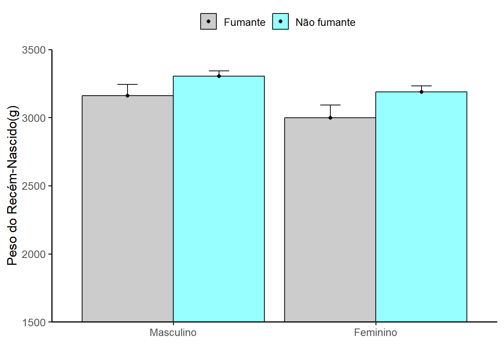
8.9 Manipulando outras partes dos gráficos
8.9.1 Mudando o nome dos eixos, o nome e a ordem dos rótulos
Para modificar o nome dos eixos, utiliza-se, com frequência, as funções xlab() e ylab() como no gráfico da Figura 8.6 . O mesmo trabalho de alteração dos rótulos pode ser feito com a função labs() como no gráfico da figura Figura 8.14 .
O nome e ordem dos rótulos podem ser modificados, usando a função scale_x_discrete() com os argumentos limits = que coloca os níveis na ordem desejada e labels = que coloca os novos nomes18 na ordem estabelecida pelo argumento limits =.
Observando, por exemplo, o gráfico da Figura 8.30, onde se usou a paleta do NEJM, verifica-se que os rótulos do eixo x estão como: fumante_leve, fumante_moderada, fumante_pesada e nao_fumante. Esses nomes não estão prontos para publicação e o ideal é que sejam modificados para Leve, Moderado, Pesado e Não, uma vez que o título do eixo x será modificado para Tabagismo Materno. Aproveitando, pode-se modificar a ordem das categorias, colocando, por exemplo, as fumantes pesadas como primeira categoria na Figura 8.37, a seguir as fumantes moderadas, leves e não fumantes para ter uma lógico crescente da intensidade de tabagismo materno.
- Cálculo das proporções de tabagismo em cada uma das categorias para adicionar ao gráfico, melhorando as informações
prop_fumo <- dados %>%
group_by(categFumo) %>%
summarise(n = n(), .groups = "drop") %>%
mutate(
# Calcula a posição vertical do ponto médio de cada segmento
posicao_y = (n) + 30,
total_faixa = sum(n),
proporcao_fumo = n / total_faixa)
prop_fumo# A tibble: 4 × 5
categFumo n posicao_y total_faixa proporcao_fumo
<fct> <int> <dbl> <int> <dbl>
1 nao_fumante 1067 1097 1368 0.780
2 fumante_leve 157 187 1368 0.115
3 fumante_moderada 37 67 1368 0.0270
4 fumante_pesada 107 137 1368 0.0782- Construção do gráfico que resultará na Figura 8.37.
ggplot(data = dados, aes(x = categFumo, fill = categFumo)) +
geom_bar(position ="dodge", color ="black")+
scale_fill_nejm() +
labs(x = "Tabagismo Materno",
y = "Frequência") +
scale_x_discrete(limits = c("fumante_pesada",
"fumante_moderada",
"fumante_leve",
"nao_fumante"),
labels = c("Pesado",
"Moderado",
"Leve",
"Não")) +
geom_text(data = prop_fumo,
aes(x = categFumo,
y = posicao_y,
label = scales::percent(proporcao_fumo, accuracy = 0.1)),
size = 4,
color = "black" ) +
theme_bw(base_size=13) +
theme(legend.position = "none")
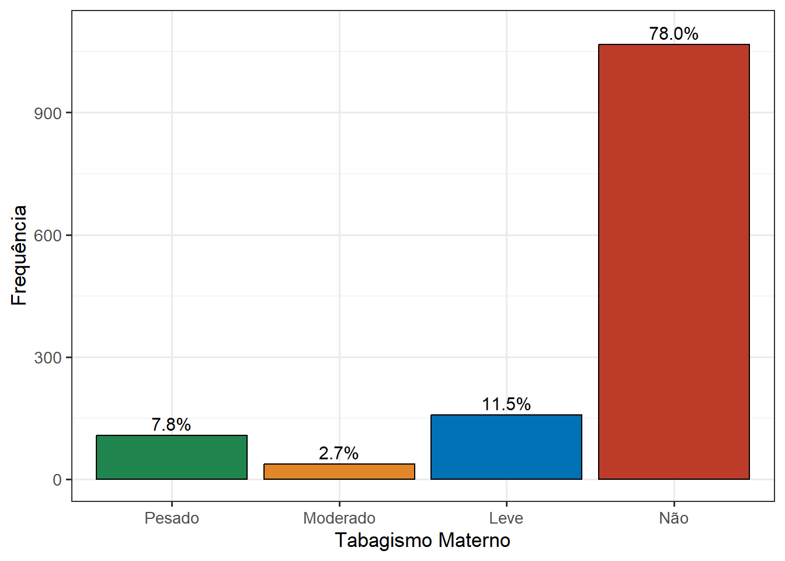
8.9.2 Título e subtítulo do gráfico
Nem sempre necessários, o título, o subtítulo ou uma nota de rodapé podem ser adicionados ao gráfico através da função labs(), usada anteriormente (por ex. na Figura 8.14) para colocar rótulos nos eixos x e y. Além de argumentos para colocar título e subtítulo, a função labs() tem argumento para nota de rodapé, caption.
Como exemplo, será plotado um gráfico com boxplots que ilustrem o impacto do tabagismo materno sobre o peso do recém-nascido. Os dados serão provenientes da amostra dadosRNT (Seção 8.7).
Serão usados todos os argumento da função labs(), e se repetirá o que foi feito na construção do gráfico da Figura 8.37, alterando os nomes dos rótulos do eixo x. O código do gráfico da Figura 8.38 vai ser atribuído a um objeto denominado bxp:
bxp <- ggplot(dadosRNT, aes(x = categFumo,
y = pesoRN,
fill = categFumo)) +
stat_boxplot(geom = "errorbar", width = 0.1) +
geom_boxplot() +
scale_fill_brewer(palette = "Pastel2") +
stat_summary(fun = "mean",
colour = "red",
size = 3,
geom = "point") +
labs(title = "Tabagismo Materno e Peso do Recém Nascido",
subtitle = "Maternidade do Hospital Geral de Caxias do Sul, 2008",
x = "Tabagismo Materno",
y = "Peso dos Recém-Nascidos (g)",
caption = "O ponto vermelho é a média de cada grupo") +
scale_x_discrete(limits = c("nao_fumante",
"fumante_leve",
"fumante_moderada",
"fumante_pesada"),
labels = c("Não", "Leve",
"Moderado", "Pesado")) +
theme_bw(base_size = 13) +
theme(legend.position = "none")
print(bxp)
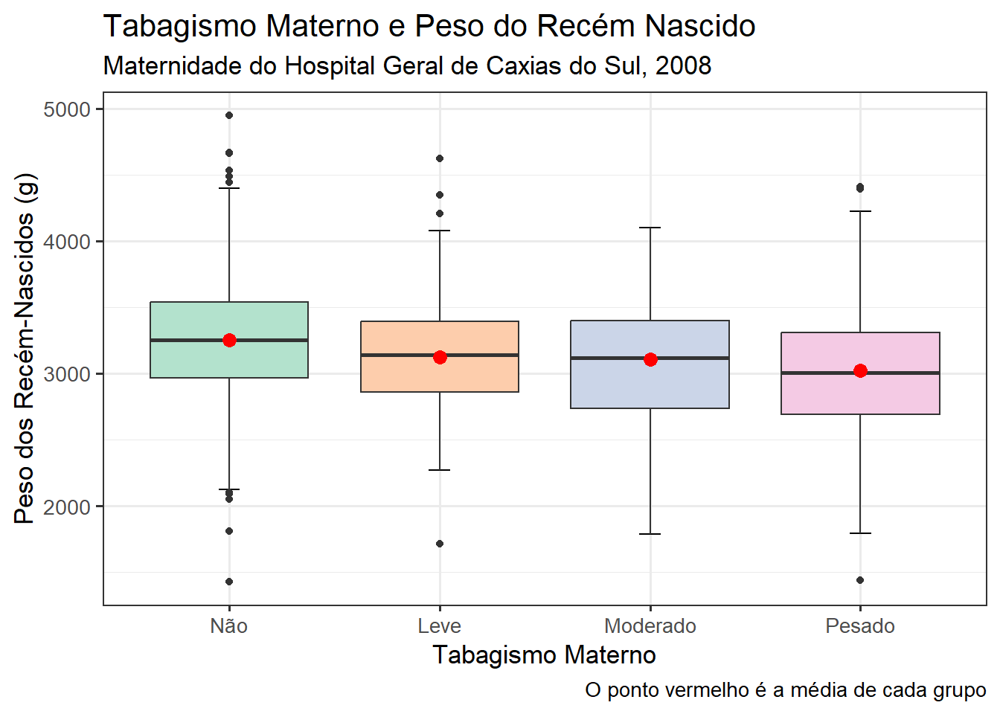
8.9.3 Modificação dos limites dos eixos
O pacote ggplot2 possui uma família de funções scale_ para modificar as propriedades referentes às escalas do gráfico. Como é possível ter escalas de números, categorias, cores, datas, entre outras, é disponibilizada uma função específica para cada tipo de escala.
Cada tipo fundamental é manipulado por uma das três funções construtoras de escala: continuous_scale(), discrete_scale() e binned_scale().
No gráfico da Figura 8.38, os pesos dos recém-nascidos estão dispostos em uma escala que varia a cada 1000 g. Para modificar esses limites, pode-se usar a função scale_y_continuous() para ter intervalos de 500 g.
O gráfico da Figura 8.38 foi designado para um objeto denominado bxp. Isto facilita o trabalho, pois não há necessidade de repetir todo o código que gerou o gráfico, apenas as modificações:
bxp +
theme(plot.title = element_text(size = 14,
face = "bold"),
plot.subtitle = element_text(size = 12,
face = "bold",
color = "darkgreen")) +
scale_y_continuous(breaks = seq(1000, 5000, 500))
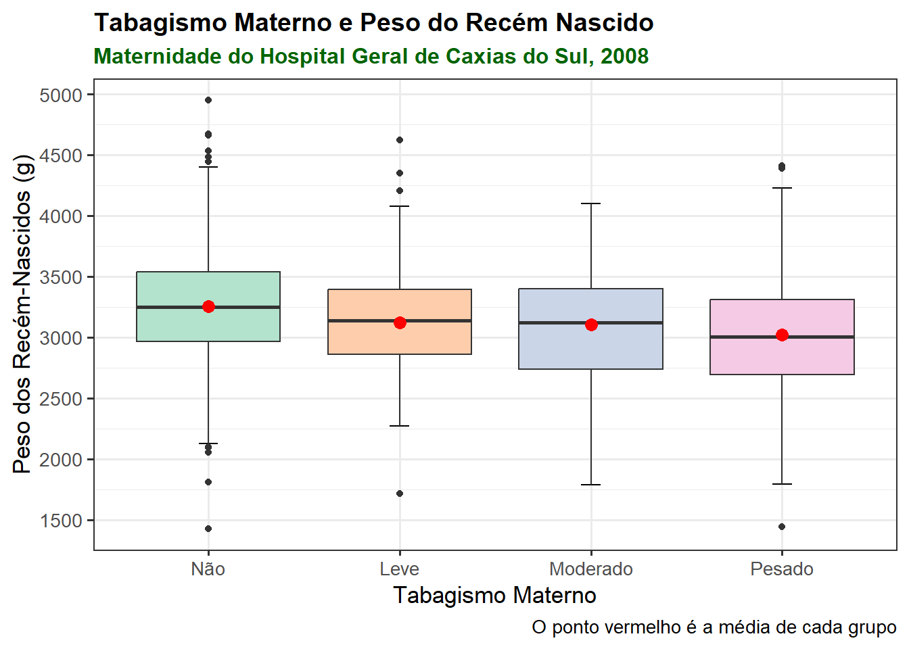
Junto com a modificação dos limites dos eixo da Figura 8.39, manipulou-se o título e subtítulo, usando a função theme() e foi aumentado o tamanho da fonte, usou-se negrito e a cor do subtítulo passou a ser “darkgreen”.
8.9.4 Modificação da expansão
Voltando aos gráficos de barra, todos, com exceção do gráfico da Figura 8.36, tem algo que incomoda ao autor: abaixo do valor 0 (zero) existe uma expansão, ou seja um espaço abaixo do 0. Isto, visualmente, é desagradável.
Para que as barras tenham início exatamente no 0 (zero), pode-se empregar a função scale_y_continuous() com o argumento expand = expansion (add = c(0,0.05)), significando que não se expande nada abaixo do 0 e se adiciona 5 unidades para cima, criando uma margem superior. Comparar a Figura 8.40 com a Figura 8.30. O rótulos do eixo y também foram corrigidos.
library(ggsci)
library(scales)
ggplot(data = dados) +
geom_bar(aes(x = categFumo,
y = after_stat(count/sum(count)),
fill = categFumo))+
scale_fill_nejm() +
scale_y_continuous (labels = percent_format (accuracy = 0.1,
decimal.mark = ",")) +
scale_y_continuous (expand = expansion(add = c(0,0.05))) +
scale_x_discrete(limits = c("nao_fumante",
"fumante_leve",
"fumante_moderada",
"fumante_pesada"),
labels = c("Não", "Leve",
"Moderado", "Pesado")) +
labs(x = "Tabagismo Materno",
y = "Proporção por categoria") +
theme_bw(base_size = 13) +
theme(legend.position = "none")
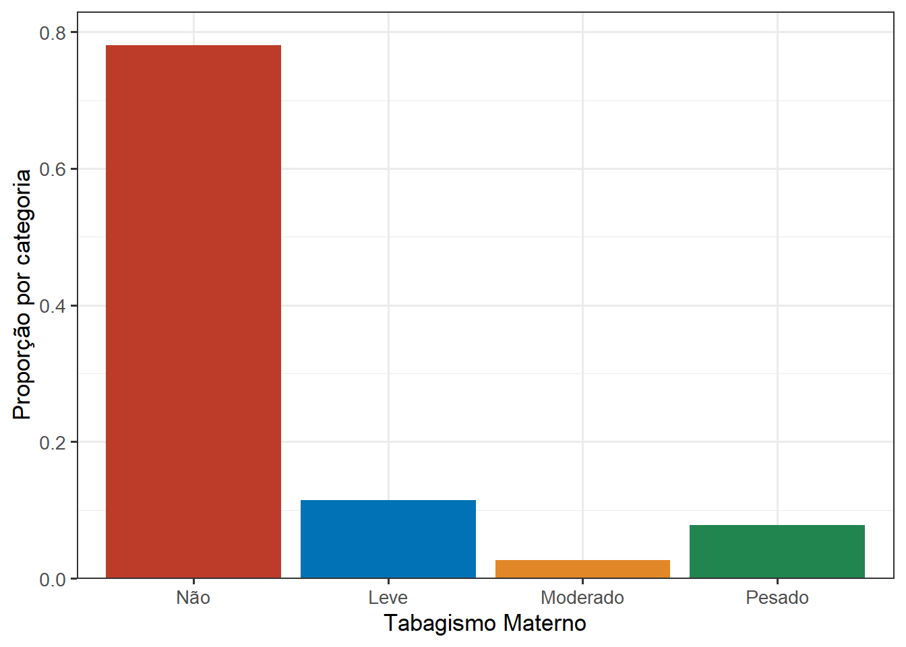
8.10 Ajustando o layout e as margens no ggplot2
8.10.1 Modificação das margens com a função theme()
Usando o gráfico da Figura 8.7, repetido aqui e designando-o a um objeto com nome de gdsip:
gdisp <- ggplot(data = dadosRNT100,
aes(x = compRN, y = pesoRN)) +
geom_point(position = position_jitter(width = 0.2, height = 0),
color = "gray20",
fill ="steelblue",
shape = 21,
alpha = 1,
size = 3,
stroke =1) +
ylab("Peso do Recém-nascido (g)") +
xlab("Comprimento do Recém-nascido (cm)")+
theme_classic(base_size = 13)
print(gdisp)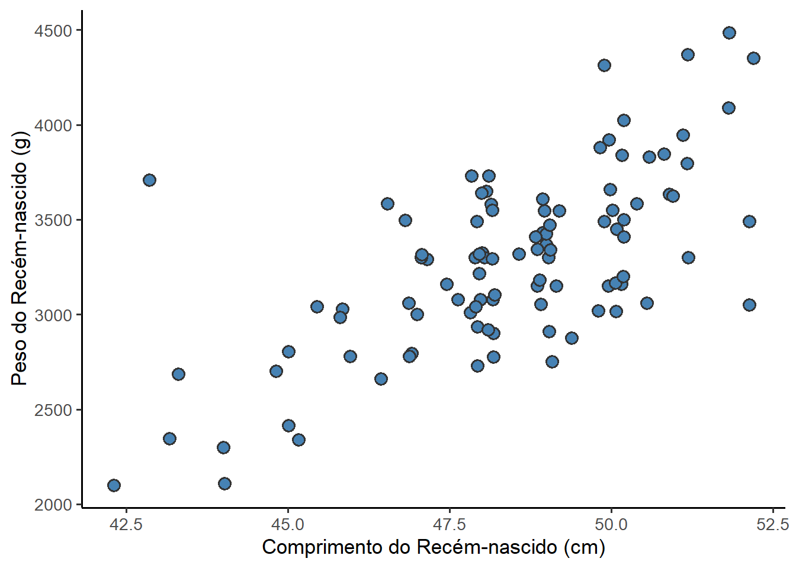
O objeto gdisp contém o gráfico de dispersão da Figura 8.7 e pode ser modificado sem ter que digitar todos os comandos novamente. Será usado para exemplicar como promover um aumento das margens, partindo do padrão do tema usado:
theme_classic()$plot.margin[1] 5.5points 5.5points 5.5points 5.5pointsPara aumentar as margens usa-se:
gdisp +
theme(plot.margin = margin(t = 80, r = 80, b = 80, l = 80))
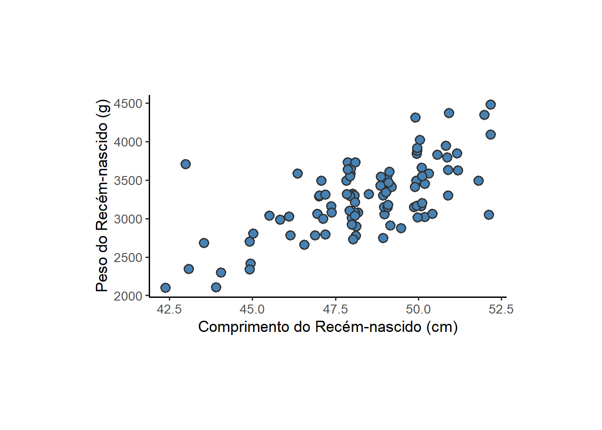
A função margin() define as margens em pontos 19. Um ponto (pt) equivale a 1/72 de polegada, ou aproximadamente 0,35 milímetros. É a mesma unidade usada para definir tamanho de fonte. portanto, quando se observa um valor de 80, significa que o gráfico terá 80 pontos de margem no topo, à direita, à esquerda e na base. Isto dá aproximadamente 28 mm de espaço em cada lado. As letras t, r, b e l equivalem, respectivamente a top, right, bottom e left.
Dica prática
Ao exportar gráficos para PDF ou PNG e quiser controlar o layout com precisão (por exemplo, para publicação), ajustar as margens com margin() é essencial para evitar que elementos fiquem cortados ou apertados demais.
categIdade \(\to\) < 20 anos, 20 a 35 anos e > 35 anos; categFumo \(\to\) Não fumante, Fumante leve: <= 10 cigarros/dia, Fumante moderada: > 10 a < 20 cigarros/dia, Fumante pesada: >= 20 cigarros/ dia↩︎
Gestações com idade gestacional igual ou acima de 37 semanas e abaixo de 42 semanas.↩︎
O adicionar aqui é literal, pois isto é feito com o sinal (+).↩︎
A legenda também pode ser colocada em outras partes do gráfico: “top” (superior), “left” (esquerda), “rigth” (direita) e ser removida (“none”).↩︎
Não acontece nada! O R ignora o código e retorna um gráfico com as sua cor padrão, a preta.↩︎
A função
paletteer_c()é usada para variáveis contínuas; apaletteer_d()para variáveis categóricas e apaletteer_dinamic()é pouco usada, mas serve para paletas que mudam conforme o número de categorias.↩︎Além da cor, os grupos em um gráfico também podem ser diferenciados por meio das estéticas shape e size. Para isso, substituir o mapeamento
fill = sexoporshape = sexoousize = sexo.↩︎Além da função específica para o facetamento, a cor agora é determinada com preenchimento dos pontos (
fill=”tomato”) colocado dentro dogeom_point()e houve uma diminuição do tamanho dos pontos (size = 4) .↩︎Outros métodos:
“loess”,“glm”,“gam”. Para mais informações, consulte a ajuda?loess,?gamou?glmouNULL, onde a escolha é automática: usa“loess”para < 1000 pontos e“gam”para > 1000.↩︎A Figura 8.15 mostrou que a correlação não parece diferir entre os sexos.↩︎
O padrão é
stat = "identity", o que significa que os valores das barras de erro devem ser fornecidos diretamente no conjunto de dados, sem cálculos adicionais.↩︎Prestar atenção para o fato de que o jitter é aleatório, por isso em cada execução do código os pontos se distribuem em posições diferentes.↩︎
Consulte a construção da Figura 8.25↩︎
A
geom_bar()conta as ocorrências e usa a altura para representar essa contagem, enquantogeom_col()usa a altura para representar o valor especificado na estética y . Ambas as funções aceitam o argumentowidth. Enquanto ogeom_bar()comafter_start()calcula os valores automaticamente, ogeom_col()exige que se forneça os valores de y (as proporções) diretamente.↩︎Este acréscimo das porcentagens dentro do gráfico é opcional. Para fazer o mesmo gráfico sem esta informação, não há necessidade dos cálculos das proporções e nem do
geom_text()que deve ser removido.↩︎Modificar se no
coord_cartesian()o valor inicial for alterado, por exemplo, 1000, 1500 ou 2000.↩︎Pode ser qualquer tema, este fica bem por ser bem limpo, sem grades, apenas eixo x e y.↩︎
Pode-se aproveitar aqui para trocar os nomes ou , simplesmente, corrigir acentuação que, às vezes, não foi colocada no dataframe.↩︎
A margem pode ser definida também em centímetros (cm), usando o mesmo comando, mas especificando que é em “cm”. Por exemplo, para aumentar 2 cm em todos os lados:
theme(plot.margin = unit(c(2, 2, 2, 20, "cm")↩︎